Three lecturers' rules carry into Exam 2. None of them is new; all of them change how you study.
| The rule | What it means for you |
|---|---|
| “I’m not going to just throw a random number at you and not give you context of whether that’s high or low.” (Professor Reynolds, Lecture 1) | Reference ranges are supplied. A troponin, a triglyceride or a C-reactive protein in a stem will come with the limit that reads it. Learn what a value means. |
| “Although a heart rhythm can be a diagnosis, you also need to be able to interpret an EKG (electrocardiogram) by naming the rhythm.” (Lecture 1) | Electrocardiography is the one place where naming the finding is fair game. Lecture 7 is the foundation for that: paper, leads, rate, intervals. |
| Questions are vignette and next-best-test: “what would be the next test that you would order?” | Lecture 8 is built for exactly this. Know what each modality can and cannot show, and what you do when a study is equivocal. |
7 · Principles of Electrocardiography
Ayelet Elwaya, MSHS, PA-C, CAQ-EM · 15 September 2026
Instructional Objectives
Topic Outline 7: Principles of Electrocardiography
- Describe action potentials and impulse conduction through the cardiac conduction system.
- Define depolarization and repolarization.
- Define absolute and relative refractory periods.
- Describe the fundamental principles of electrocardiography, including: i. Time · ii. Voltage · iii. Vectors · iv. Bipolar leads · v. Unipolar leads
- Identify the standard limb and precordial leads and their proper anatomical placement.
- Determine heart rate using an electrocardiogram.
- Measure and interpret: i. PR interval · ii. QRS duration · iii. QT interval · iv. QTc interval
- Identify normal electrocardiographic intervals and waveforms.
| She said | So |
|---|---|
| “I will not be testing you on calcium channels and funny sodium channels and all that good stuff because you’ve done that in physiology.” But an electrolyte she uses on a slide “is” fair game. | Know which ion moves in each phase, not the channel subtypes. |
| “Yes, you need to know what happens in each phase.” | The five-phase table in 7.1 is examinable as written. |
| The refractory periods are “very important from now until forever.” | They explain R-on-T, P-on-T and why a prolonged QTc is dangerous. |
| Lead placement: “I am sorry, you do have to memorize this.” And bipolar versus unipolar, precordial versus limb: “you have to know the distinction.” | 7.4 and 7.5 are memorization, not reasoning. |
| “It’s very important that you know how to identify the J point.” | ST elevation is measured from it (see 7.7). |
| Bazett’s formula: “please do not memorize. I will never ask you about the formula.” The bifascicular-block aside: “I will not ask you this on the test.” | Know that the QTc is the rate-corrected QT and its thresholds, not how it is computed. |
7.1 · Objective a — The action potential and the conduction system
Four properties make a cardiac cell a cardiac cell: automaticity (it produces its own impulse), excitability (it responds to an impulse or stimulus), contractility (it contracts) and conductivity (it passes the impulse from myocyte to myocyte).
The action potential is a rapid change in voltage across the cell caused by ion movement. It has five phases, and the sequence starts at phase 4: 4 → 0 → 1 → 2 → 3.
| Phase | Name | What happens |
|---|---|---|
| 4 | Resting state (diastole) | Cell is ready to respond. More potassium inside; sodium and calcium outside. Inside voltage −90 mV. |
| 0 | Upstroke (depolarization) | Fast sodium channels open; rapid sodium influx makes the inside positive. |
| 1 | Early repolarization | Sodium channels close and potassium channels reopen; a slight negative shift. |
| 2 | Plateau | Calcium enters, causing contraction, balanced by potassium moving the other way, so the voltage holds level. |
| 3 | Rapid repolarization | Calcium channels close; potassium channels stay open; the inside returns to −90 mV. |
A slide and its own figure disagree on direction. The text of slides 9 and 10 describes potassium as moving into the cell during phases 2 and 3. The figure on the same slides (below) labels it potassium efflux, which is the physiology: potassium leaves the cell to repolarize it. Learn it as potassium out, calcium in, during the plateau.
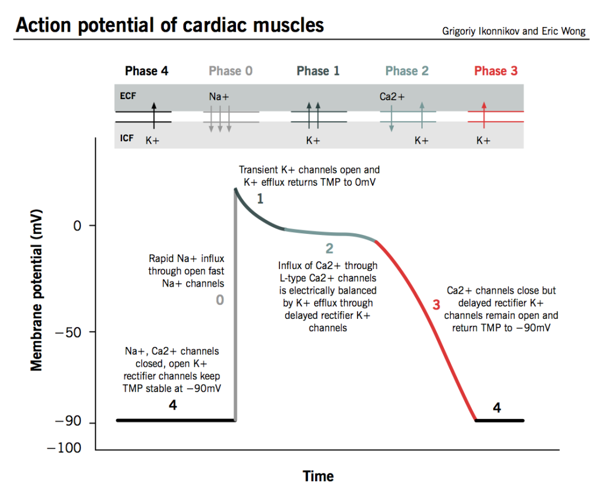
Also tested
- Relative refractory period. Unlike the absolute period, a sufficiently strong stimulus can produce a response. The cell is excitable but not fully recovered, so a stimulus arriving then can start something abnormal.
- Right bundle branch. It is much longer than the left, despite the left ventricle being the larger chamber; the anatomy does not follow chamber size.
- Phase 3, rapid repolarization. Calcium channels close while potassium channels remain open, returning the cell to minus ninety millivolts; the inward current stops and the outward one continues unopposed.
- Absolute refractory period. It runs from phase 0 to the middle of phase 3 and lasts about a hundred and eighty milliseconds, during which no stimulus of any strength will produce another action potential.
- Depolarization and contraction. Depolarization represents activation of cardiac tissue, and it precedes contraction; the electrical event comes first, so an electrocardiogram showing depolarization does not prove the muscle actually contracted.
- Membrane during depolarization. The membrane becomes less negative, moving away from its resting negativity.
- Left anterior fascicle. Of the left fascicles, the left anterior fascicle is the one that extends across the anterior wall of the left ventricle.
The conduction system
A network of specialized muscle cells that generate and spread the signal so the heart beats in a coordinated rhythm. Each level can take over pacing if the one above fails, at a slower intrinsic rate.
| Structure | Where | Key facts | Intrinsic rate |
|---|---|---|---|
| Sinoatrial node | Upper wall of the right atrium, just below the vena cava opening | Main pacemaker. Three internodal pathways to the atrioventricular node: superior anterior (fast, used by the majority), middle, and inferior posterior (slow). The other two usually terminate before reaching the atrioventricular node. | 60–100 per minute |
| Atrioventricular node | Junction of atria and ventricles, near the coronary sinus | Introduces a short pause and amplifies the signal. Back-up pacemaker if the sinoatrial node fails. | 40–60 per minute |
| Bundle of His | Crosses the nonconductive atrioventricular septum | In a normal heart, the only electrical pathway from atria to ventricles. | — |
| Left bundle branch | Into the left ventricle | Splits into three fascicles: left posterior, intraventricular septal, and left anterior (which becomes the Purkinje network). | — |
| Right bundle branch | Into the right ventricle | Much longer than the left despite the smaller ventricle; terminates in the Purkinje network. | — |
| Purkinje network | Ventricular walls | Third pacemaker if both nodes fail. Conducts faster and more efficiently than any other part of the system. | 20–40 per minute |
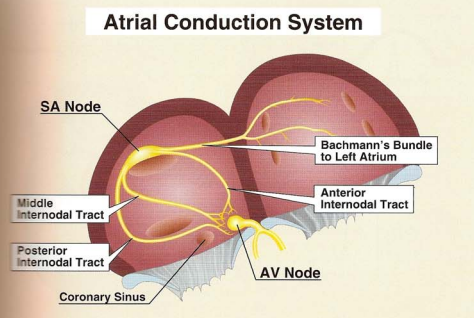
A bifascicular block is not the same as a left bundle branch block (slide 16). She said this will not be tested beyond that distinction.
The cardiac vector is the arrow showing the direction and strength of current at any moment. The true pathway of conduction is left and down, toward the anterior chest.
7.2 · Objective b — Depolarization and repolarization
| Depolarization | Repolarization | |
|---|---|---|
| Membrane | Becomes less negative | Returns toward its resting state |
| Represents | Activation (excitation) of cardiac tissue | Recovery of the cells |
| Timing | Precedes contraction | Follows it |
| On the tracing | P wave (atria), QRS complex (ventricles) | T wave (ventricles) |
7.3 · Objective c — Absolute and relative refractory periods
| Absolute refractory period | Relative refractory period | |
|---|---|---|
| Definition | The cell will not respond to another stimulus | The cell will respond to a second stimulus, but it is very fragile |
| Span | Phase 0 to mid phase 3 | Mid phase 3 to the end of phase 3 |
| Duration | Typically about 180 ms | — |
| On the tracing | The peak of the T wave is the dividing line between the two. | |
Why it matters. A beat that lands in the relative refractory period, before the previous one has finished, is the mechanism behind the dangerous patterns you will meet later: R on T, P on T and a prolonged QTc are all risk factors for a beat hitting before the last one ended.
Also tested
- Absolute refractory period. It lasts about 180 milliseconds, running from phase 0 to the middle of phase 3; throughout that time the cell will not respond to another stimulus.
7.4 · Objective d — Time, voltage, vectors, bipolar and unipolar leads
An electrocardiogram is a visual representation of cardiac electrical activity over time. The direction of current is compared with a stationary electrode: a positive overall vector gives an upward deflection, a negative one a downward deflection, and a net zero traces only the isoelectric line.
| Axis | Small box | Large box (5 small) | Other |
|---|---|---|---|
| Time (left to right) | 0.04 seconds | 0.2 seconds | 5 large boxes = 1 second. Strips are usually 3 or 6 seconds. |
| Voltage (up and down) | 1 mm = 0.1 mV | 5 mm | Standard calibration: 10 mm (two large boxes) = 1 mV. |
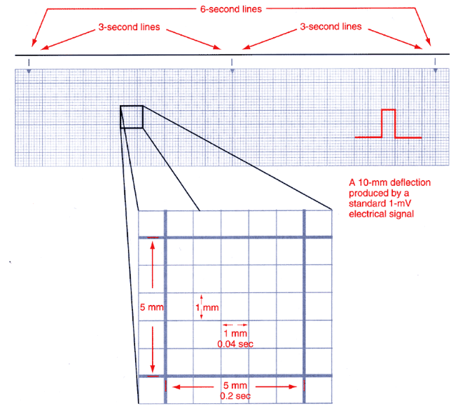
| Lead type | What it measures | Which leads |
|---|---|---|
| Bipolar | Voltage difference between two body points, one positive and one negative electrode | Leads I, II, III (Einthoven’s triangle: both shoulders and the left lower extremity) |
| Unipolar | Activity from one electrode reference point | aVR, aVL, aVF (augmented: one physical lead plus a theoretical negative pole created by the machine) and V1–V6 |
| An electrocardiogram CAN tell you | It CANNOT tell you |
|---|---|
| Whether there is electrical activity · conduction problems · rate · rhythm · where the impulse originates · how much electricity is conducted | Hemodynamic status · cardiac output · whether the patient has a pulse |
Also tested
- Lead deflection and vector direction. When the overall vector at a given moment is directed away from a lead, that lead records a negative deflection; toward the lead gives a positive deflection, which is why the same beat looks different in different leads.
- Standard calibration. Two large boxes, a 10 millimeter deflection, equal 1 millivolt, so each small box is 0.1 millivolt.
7.5 · Objective e — Limb and precordial leads and their placement
Every lead is a different point of view. A standard 12-lead uses 10 physical electrodes: four limb electrodes (right arm, left arm, left leg, plus right leg) and six chest electrodes. The four limb electrodes produce six leads — I, II, III, aVR, aVL, aVF — the hexaxial leads, used to determine the axis. Add V1–V6 and you have twelve views from ten wires.
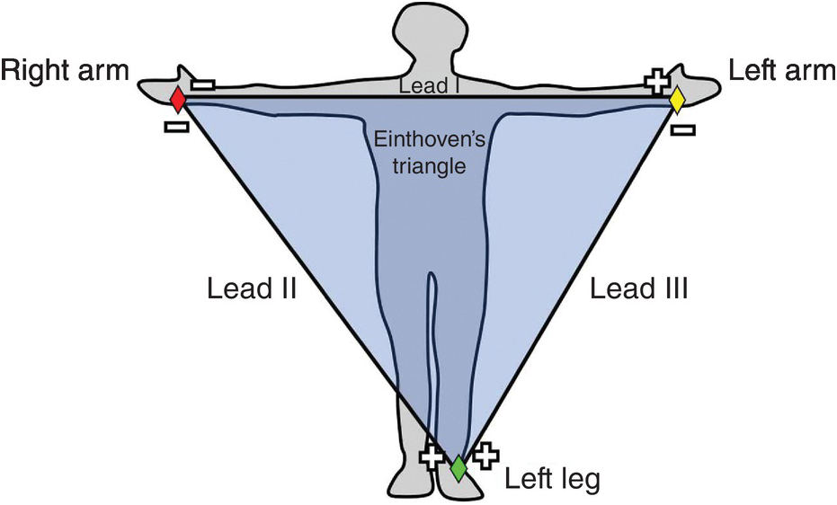
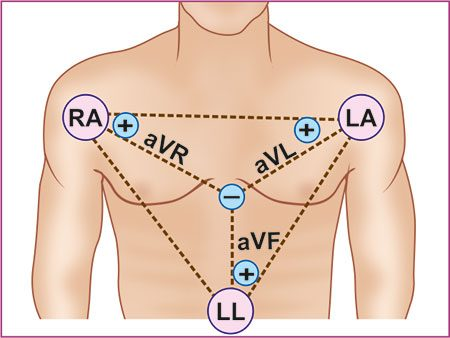
The precordial (chest) leads give a horizontal view of the heart, with very specific placement:
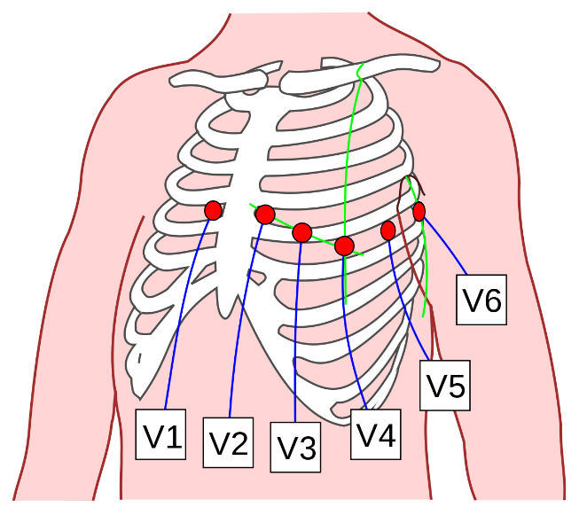
Lead II has the best view of the heart’s vector, so it is the lead used for rhythm interpretation. The cardiac cycle looks different in other leads.
Contiguous leads look at the same area of the heart: V1, V2, V3, V4 · II, III, aVF · I, aVL, V5, V6.
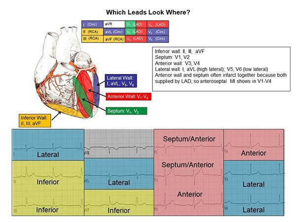
Also tested
- Contiguous leads. These are two or more leads looking at the same area of the heart, so a change in a contiguous group means more than the same change in one isolated lead.
- Hexaxial reference system. It is used to determine the normal axis of the heart; six views in one plane make an axis calculable.
- Bipolar leads. Leads I, II and III are bipolar, forming the imaginary triangle across the shoulders and the left lower body; everything else on a twelve-lead tracing is unipolar.
7.6 · Objective f — Determining heart rate
Both methods only work if the rhythm is regular, so check regularity first: compare consecutive R to R intervals, with calipers or a marked sheet of paper if in doubt.
| Method | How |
|---|---|
| 6-second method | Take a 6-second strip (two 3-second markers, or 30 large boxes). Count QRS complexes and multiply by 10 for the ventricular rate; count P waves and multiply by 10 for the atrial rate. |
| 300 method | Start at an R wave on a heavy line. Each following heavy line counts down: 300, 150, 100, 75, 60, 50. The next R wave’s position gives the rate. |
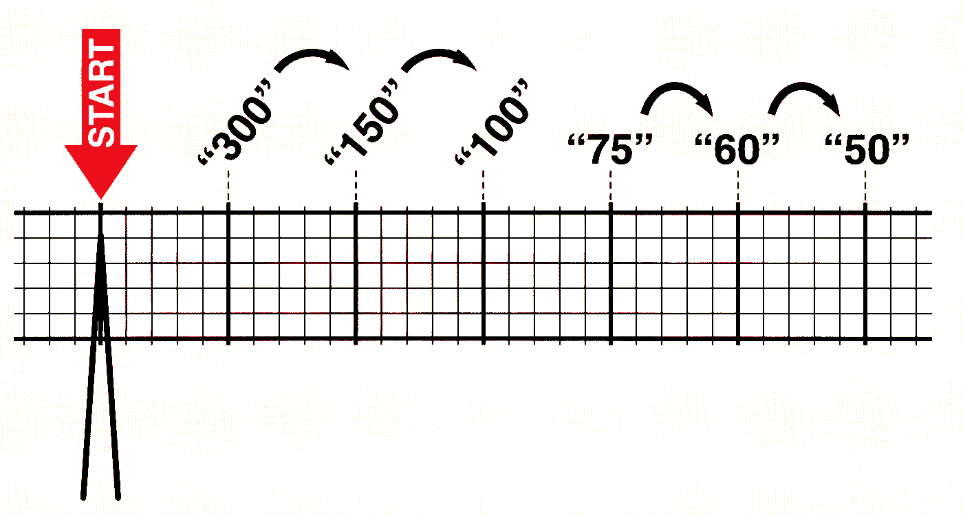
Also tested
- Six-second rate method. Multiply the QRS count in a six-second strip by ten, since six seconds is a tenth of a minute; eight complexes give a ventricular rate of eighty beats per minute.
- Regularity of the rhythm. When not obvious by eye, determine it by comparing consecutive R to R intervals with calipers, or with a marked sheet of paper.
- R to R interval. It is used to assess rate and regularity, and comparing consecutive R to R intervals is the first thing done to a strip.
- Atrial rate. The atrial rate comes from counting P waves in six seconds and multiplying by ten, so twelve P waves in a six-second strip give 120 beats per minute.
- Six-second strip. Each large box is 0.2 seconds, so fifteen large boxes make 3 seconds and thirty large boxes make 6 seconds.
7.7 · Objectives g & h — Waves, segments, intervals and their normal values
A wave is a deflection from baseline; a segment is the flat line between two waves; an interval spans at least one wave plus one segment. The QRS is the one complex.
| Component | Represents | Normal |
|---|---|---|
| P wave | Atrial depolarization | Under 0.12 s (3 small boxes); upright in lead II |
| PR interval | Start of P to start of QRS: atrial depolarization, the atrioventricular node delay and His-Purkinje conduction | 0.12–0.20 s (3–5 small boxes) |
| QRS complex | Ventricular depolarization | Under 0.12 s; narrow with sharp points. Not every wave appears in every lead. |
| Q wave | Septal depolarization (first negative deflection after the PR) | Under 0.04 s, low amplitude; not always visible |
| R wave | Anterior left ventricle (first positive deflection) | — |
| S wave | Lateral left ventricle (first negative deflection after R) | Must go below baseline to be a true S wave |
| J point | Junction where the QRS ends and the ST segment begins | At baseline; 1 mm variance allowed |
| ST segment | Between ventricular depolarization and repolarization; ventricles hold contraction | At baseline |
| T wave | Ventricular repolarization | 0.16–0.25 s; its peak divides absolute from relative refractory period |
| QT interval | All ventricular activity: start of QRS to end of T | 350–450 ms in males, 360–460 ms in females |
| QTc | QT corrected for heart rate (Bazett’s formula, computed by the machine) | Same values as the QT. Above 450 (460 in women) to 500 ms = borderline or prolonged; above 500 ms = high-risk prolongation |
| U wave | Unclear; possibly Purkinje repolarization. Follows T in the same direction; best in V2–V3 | Prominent in hypokalemia, hypercalcemia, prolonged QT, post-infarction |
| TP segment | Resting state between T and the next P | The best place to judge the isoelectric line |
| R to R interval | Distance between consecutive R waves | Used for rate, regularity and heart blocks |
Also tested
- Corrected QT above 500 milliseconds. A corrected QT beyond five hundred milliseconds is high risk prolongation, above the borderline range that begins in the low four hundreds.
- Corrected QT. It is used rather than the raw QT interval because the QT interval changes with heart rate; without correcting, the same heart would show different values at different rates.
- Q wave. It represents depolarization of the interventricular septum, which travels away from lead II and so gives a downward deflection. It is not always visible.
- ST segment. It falls between ventricular depolarization and repolarization, when the ventricles hold their contraction to allow emptying; it is the part of the beat that does the ejecting.
- S wave. A deflection must extend below the baseline to count as a true S wave; if it does not, it is called an S wave pattern instead.
- Prominent U waves. They are associated with hypokalemia, hypercalcemia, prolonged QT and the period after myocardial infarction; the electrolyte associations are the practically useful ones.
- PR interval. It includes atrial depolarization, the delay at the atrioventricular node, and conduction through the His-Purkinje system; as three events in one measurement, a prolonged PR interval does not by itself say where the hold-up is.
- Q wave width. A normal Q wave is under 0.04 seconds (one small box) and low in amplitude, so a Q wave of 0.08 seconds, two small boxes, is too wide.
- J point. The J point, where the QRS complex ends and the ST segment begins, should be at the baseline, with one millimeter of variance allowed in most leads.
8 · Cardiac Imaging and Vascular Studies
Ayelet Elwaya, MSHS, PA-C, CAQ-EM · 17 September 2026
Instructional Objectives
Topic Outline 8: Cardiac Imaging and Vascular Studies
- Identify cardiovascular anatomy on radiographic studies.
- Identify structures comprising the cardiac silhouette.
- Identify common abnormal cardiovascular imaging findings.
- Measure the cardiothoracic ratio to evaluate cardiac enlargement.
- Compare and contrast cardiovascular imaging modalities.
- Discuss indications, advantages, and limitations of: i. Echocardiography · ii. Stress testing · iii. Nuclear cardiology studies · iv. Cardiac CT · v. Cardiac MRI · vi. Coronary angiography · vii. Vascular ultrasound
| She said | So |
|---|---|
| The gold standard to diagnose coronary artery disease — “that was a high-miss last year” — is “to put a catheter in the coronary artery.” | Coronary angiography is the gold standard, even though a computed tomography angiogram can show the calcification. |
| “If I give you a test question about someone who needs an echo to see their left atrial appendage” and they have a history of esophageal stricture, “scratch that answer out.” | Know the transesophageal echocardiogram contraindications, and what the transthoracic study cannot see. |
| “I do want you to remember that your predicted heart rate is 220 minus your age.” | And that a valid test reaches 85% of it. How the numbers were derived is not needed. |
| A patient who “couldn’t hit” their target heart rate and stopped early without chest pain: “What is the next best step … A cardiac CTA (computed tomography angiogram)!” | An equivocal or non-diagnostic stress test is an indication for coronary computed tomography angiography. |
| “The main indication for a left heart cath is to visualize your coronary arteries — take a highlighter, circle it — the main reason you would want to do a right heart cath is for people you are assessing for pulmonary hypertension.” | One indication each, circled. |
| After a positive computed tomography angiogram with left anterior descending disease, the next step is the catheter, “because intervention is done according to percentage.” | Noninvasive tests say whether disease is there; angiography says how much. |
| On the exercise endpoint chart: “Do not memorize” the order, “but understand what this chart is saying … these are indications to stop the test.” The treadmill protocol tables are not for memorizing. | Know why a test is stopped, not the table layout. |
8.1 · Objectives a & b — Cardiovascular anatomy and the cardiac silhouette
The chest radiograph is not the primary modality for cardiac function or detailed anatomy, but when one is obtained it gives important clues. Partially visible: the cardiac silhouette, great vessels, pulmonary vasculature, and lungs and pleura.
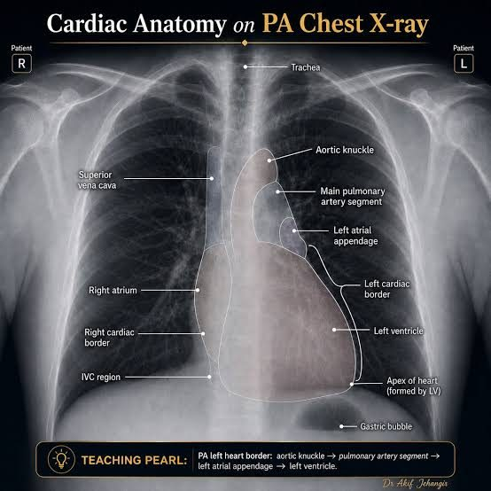
| Border | Structures, top to bottom |
|---|---|
| Right heart border | Superior vena cava → right atrium (inferior vena cava region at the base) |
| Left heart border | Aortic knuckle (arch) → main pulmonary artery → left atrial appendage → left ventricle → apex |
Also tested
- Chest radiography in cardiac evaluation. It is not the primary modality, but it gives useful clues when obtained; it is frequently the study already in hand, so reading it well matters.
8.2 · Objective c — Common abnormal findings
Chest radiograph abnormalities that can indicate cardiac pathology:
| Finding | Note |
|---|---|
| Pulmonary edema · pleural effusion | The heart shows itself through the lungs |
| Cardiomegaly | Judged by the cardiothoracic ratio (8.3) |
| Cephalization | Upper-lobe vessels become larger and more prominent than the lower ones. Seen in heart failure and pulmonary hypertension. |
| Calcification | Great vessel, valvular, or pericardial |
| Tension physiology | Pneumothorax causing tamponade |
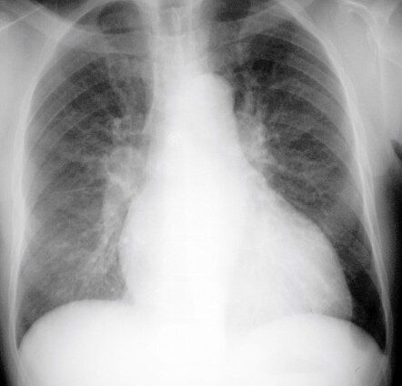
Also tested
- Chest radiograph indicators of cardiac pathology. They are edema, effusion, cardiomegaly, cephalization and calcification, with tension physiology completing the list; the calcification may be of the great vessels, the valves or the pericardium.
- Vascular ultrasound image formation. Quartz crystals emit high frequency pulses that reflect off tissue; the returning echoes are turned into a picture, what returns depends on the density of what the pulses meet, and anything that stops sound returning leaves a gap.
8.3 · Objective d — The cardiothoracic ratio
Widest cardiac diameter divided by the widest internal thoracic diameter. Normal 0.42–0.5. A ratio above 0.50 on a properly performed posteroanterior film suggests cardiomegaly — the silhouette should occupy no more than about half the thoracic width.
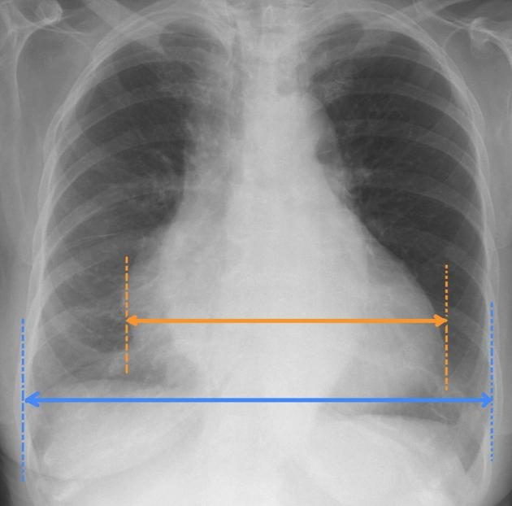
8.4 · Objective e — Comparing the modalities
| Modality | Best at | Cannot / against |
|---|---|---|
| Chest radiograph | Clues when already obtained: silhouette, vessels, lungs | Not for function or detailed anatomy |
| Vascular ultrasound | Vessels and flow, no radiation, portable, repeatable | Operator dependent; habitus, bone and air limit it; deep vessels hard |
| Echocardiography | Structure and function together, bedside | Transthoracic view poor for the posterior heart; transesophageal is invasive |
| Stress testing | Inducible ischemia and functional capacity | Invalid if 85% of predicted maximum is not reached |
| Nuclear perfusion | Ischemia versus viability; more accurate than standard or echo stress | Radiotracer |
| Cardiac computed tomography and angiography | Anatomy, calcium, noninvasive coronary assessment; superior resolution to echo | Anatomy only, not function; radiation, contrast, rate dependent, blooming |
| Cardiac magnetic resonance | Detailed anatomy and function, viability, inflammation; no ionizing radiation or iodinated contrast | Implants, long acquisition, claustrophobia |
| Coronary angiography | Gold standard for coronary anatomy; can treat during the study | Invasive: hematoma, pseudoaneurysm |
8.5 · Objective f.i — Echocardiography
Noninvasive evaluation of chamber size, atrial and ventricular function and wall thickness, ejection fraction, blood flow and velocity with Doppler, valve structure and function, and intracardiac shunts, hemodynamics and pressures.
| TTE (transthoracic echocardiogram) | TEE (transesophageal echocardiogram) | |
|---|---|---|
| Transducer | Outside the body, on the chest wall | Inside, on a modified endoscope in the esophagus |
| Use | Most common; bedside and noninvasive | When more structural detail is needed, particularly the inferior and posterior heart |
| Procedure | Left lateral decubitus, gel, probe over several windows | Left lateral decubitus; topical anesthetic to the throat; intravenous sedative; electrocardiogram and vital-sign monitoring; patient may swallow to pass the probe |
The transesophageal study sees in more detail: left atrium, mitral valve, pulmonary artery, aorta, coronary arteries. When to use it: aortic and great-vessel disease (dissection, dilation, arteritis), cardiac tumor (myxoma), prosthetic valve function, valve vegetations, cerebral ischemia, and left atrial appendage thrombus.
TEE (transesophageal echocardiogram) contraindications — anything the probe could injure or an airway you cannot protect: altered mental status or an uncooperative patient · esophageal stricture, malignancy, or varices with recent bleeding · odynophagia or dysphagia history · Zenker’s diverticulum (identify with a swallowing study first) · cervical spine arthritis with reduced range of motion · obstructive sleep apnea or airway risk.
Also tested
- Transthoracic echocardiography. It is the most common echo procedure because it can be performed at the bedside and is noninvasive. Availability, not image quality, makes it the default, and the trade is detail at the back of the heart.
- Transesophageal echocardiography. Unlike the transthoracic study, it requires throat anesthesia, sedation and monitoring. It is a procedure rather than a scan, so it carries a contraindication list.
- Contraindications to a transesophageal study besides esophageal disease. An uncooperative patient or altered mental status, restricted neck movement (cervical spine arthritis with reduced range of motion), and airway risk (obstructive sleep apnea or other risk of airway compromise).
- Transesophageal study in cerebral ischemia. It can find thrombus in the left atrial appendage, looking for the source rather than the consequence; the appendage is the site the transthoracic study sees worst.
- Zenker's diverticulum before a transesophageal study. It must be identified first because the probe risks entering and perforating the pouch; being a pouch rather than a narrowing, the operator may feel nothing wrong until the damage is done.
- Sedation before a transesophageal echocardiogram. An intravenous sedative helps the patient relax and prevents vomiting while the probe is passed through the mouth and down the esophagus.
8.6 · Objective f.ii — Stress testing
Four types: standard exercise, echocardiography, nuclear, and pharmacologic.
The exercise tolerance test assesses functional capacity and indirectly detects ischemia through continuous electrocardiogram monitoring — ST depression or new premature ventricular contractions. Treadmill or stationary cycle (bicycle preferred; arm ergometry exists), run to a protocol, usually Bruce. Complications: arrhythmia, angina, infarction, death.
Validity. The patient must reach at least 85% of predicted maximal heart rate, where predicted maximum = 220 minus age. Below 85%, an otherwise negative test is inadequate to exclude ischemic heart disease.
| Indications | Procedure |
|---|---|
| Symptoms suggesting ischemia (exertional chest pain) · acute chest pain once acute coronary syndrome and infarction are excluded · known ischemic disease with a change in status · prior revascularization · new heart failure or cardiomyopathy · certain arrhythmias · preoperative assessment of a high-risk patient before non-cardiac surgery | Resting electrocardiogram and blood pressure (supine and standing) → exercise increased by metabolic equivalents → blood pressure in the last minute of each stage → watch face, color, tracing and pressure → stop at maximum performance, ischemic signs or symptoms, or a predetermined endpoint |
![Table titled Exercise test endpoints, divided into patient-determined endpoints such as wanting to stop, chest discomfort and severe dyspnea; provider-determined endpoints including looking unwell, exertional hypotension, systolic pressure above 250 or diastolic above 120 millimeters of mercury, and electrocardiogram endpoints such as marked ST depression, new bundle branch block, high-grade atrioventricular block, ventricular tachycardia or fibrillation, increasing ectopy and supraventricular tachyarrhythmia; equipment failure; and protocol-determined endpoints.](pdm-exam-2-study-guide-images/8-exercise-endpoints.png)
| Variant | For whom | Key point |
|---|---|---|
| Echocardiography stress | Can exercise, but baseline electrocardiogram abnormalities (ST-T changes) would confuse interpretation | Echo immediately after exercise, while the heart is still fast, looking for new wall-motion abnormality |
| Pharmacologic stress | Cannot exercise (for example wheelchair dependent) | Adenosine or dipyridamole vasodilate the coronaries; dobutamine increases cardiac workload |
Also tested
- Echocardiographic stress test. It is the appropriate initial choice for a patient who can exercise but whose resting tracing is abnormal, since the electrocardiogram cannot be read for ischemia if already abnormal and imaging must carry the answer.
- Post-exercise echocardiogram. It looks for abnormal left ventricular wall motion induced by exercise. The finding is transient and resolves as the heart recovers, so the patient dismounts quickly and is imaged promptly.
8.7 · Objective f.iii — Nuclear cardiology
A small amount of radioactive perfusion tracer is injected and taken up by the heart. It assesses ischemia, myocardial blood flow, pumping function, and the size and location of an infarction.
Myocardial perfusion imaging pairs rest images with images after exercise or pharmacologic stress (adenosine, dobutamine), read by a gamma camera (single-photon emission computed tomography) or positron emission tomography. Diseased myocardium receives less flow under stress, so less tracer uptake after stress means a blockage or vasospasm. Tissue that does not light up at all is dead — which is how it shows viability.
Also tested
- Nuclear stress pattern. Tracer uptake that is normal at rest but reduced after stress indicates inducible ischemia from a coronary stenosis: the tissue is alive but cannot increase its supply when demand rises.
- Radionuclide myocardial perfusion imaging: prognosis. Prognosis is a stated indication: the study identifies patients at increased risk of myocardial infarction and those who may need angiography or surgery, so it predicts future cardiac events.
8.8 · Objective f.iv — Cardiac CT (computed tomography) and CT angiography
Computed tomography optimized for the heart, coronaries, chambers, valves, pericardium and great vessels. Coronary computed tomography angiography evaluates the coronary arteries; non-contrast cardiac computed tomography is used for coronary artery calcium scoring. Because the heart moves, metoprolol slows it and nitroglycerin dilates the coronaries, and the scan is gated to the electrocardiogram.
| Computed tomography angiography indications | Cardiac computed tomography indications |
|---|---|
| Chest pain: presence and distribution of coronary disease · detect or exclude stenosis or plaque · equivocal or non-diagnostic stress test | Coronary calcium · coronary anatomy anomalies · congenital heart disease · preoperative planning (valves, great vessels); usually done right before a computed tomography angiogram |
| Advantages | Disadvantages |
| Superior resolution to echocardiography · internal structures · noninvasive coronary assessment · fast | Radiation · contrast (kidney disease) · rhythm and rate dependent · blooming artifact overstates calcification · anatomy only, not function |
Also tested
- Cardiac computed tomography preparation. Cardiac medications are given to control heart rate, since the moving heart degrades the images. The study is also synchronized to an electrocardiogram so the heart can be examined at chosen points in the cycle.
- Blooming artifact. Heavy calcification appears larger than it is on cardiac computed tomography, so a stenosis looks more severe; it exaggerates the very lesion the study was ordered to assess.
- Cardiac computed tomography indications. Pre-operative planning before cardiac surgery, particularly valvular and great vessel procedures, is an indication, alongside calcium deposits, coronary anatomical anomalies and congenital disease. It is usually done immediately before the angiographic study.
- Limitation of cardiac computed tomography. Compared with echocardiography and magnetic resonance, it assesses anatomy but not function: it shows structure in great detail but cannot tell how well it is working, which decides when it is the wrong study.
- Coronary computed tomography angiography indication. Evaluating an equivocal or non-diagnostic stress test is a stated indication; it answers the question the stress test left open, alongside assessing chest pain and detecting or excluding stenosis and plaque.
- Cardiac computed tomography and the electrocardiogram. Because the heart is constantly moving, tying the scan to the electrocardiogram tracing lets the heart be evaluated at chosen points in the cycle, to view different stages of the cardiac cycle.
8.9 · Objective f.v — Cardiac MRI (magnetic resonance imaging), now cardiovascular magnetic resonance
Magnetic fields and radiofrequency map hydrogen into three-dimensional images of the heart and great vessels, with very detailed anatomy. It assesses anatomy (mainly muscle), ventricular function, great vessels, coronary anatomy, flow, viability, perfusion and inflammation — without ionizing radiation or iodinated contrast.
An echocardiogram is done before it is ordered. Indications: thoracic aorta (aneurysm, dissection, intramural hematoma, coarctation) · congenital heart disease (coronary anomalies, shunt quantification) · cardiomyopathies (hypertrophic, ischemic versus nonischemic, acute myocarditis, sarcoidosis) · left ventricular viability.
![Table titled Advantages and disadvantages of cardiac magnetic resonance imaging. Advantages: three-dimensional, high spatial and temporal resolution, intrinsic high contrast with no need for iodinated contrast, no ionizing radiation, no interference from lung or bone, multiple techniques in one system. Disadvantages: contraindicated with certain implants such as aneurysm clips, nerve stimulator units and certain pacemakers, lengthy acquisition, distorted electrocardiogram, requires electrocardiogram and respiratory gating, claustrophobia.](pdm-exam-2-study-guide-images/8-cmr-advantages.png)
Also tested
- Limitations of cardiovascular magnetic resonance. Along with claustrophobia, a distorted electrocardiogram and the need for electrocardiographic and respiratory gating, the long scan, a lengthy acquisition time, is one of its recognized drawbacks.
8.10 · Objective f.vi — Coronary angiography and the invasive studies
Coronary angiography gives detailed images of the coronary vessels and is the gold standard for coronary anatomy, usually done with cardiac catheterization and before percutaneous or surgical intervention. Under local anesthesia and sedation, a catheter is guided by fluoroscopy, pressures are measured, contrast is injected into each coronary artery, and treatment can be done in the same procedure (balloon angioplasty or stent).
| Left heart catheterization | Right heart catheterization |
|---|---|
| Via an artery. Main use: the coronary arteries. Also aortic pressure, systemic vascular resistance, aortic and mitral valves, left ventricular pressure and function. | Via a vein. Main use: pulmonary hypertension. Right atrial, right ventricular, pulmonary artery and occlusion pressures, pulmonary vascular resistance, tricuspid and pulmonic valves, shunts. |
Indications: to define a suspected problem when intervention is anticipated · to exclude significant disease when other studies are equivocal or symptoms are severe · high risk on noninvasive testing · angina despite therapy · unstable angina · acute infarction · high-risk non-cardiac surgery · arrhythmia suspected to be vascular.
Complications at the access site — always check it: hematoma, and pseudoaneurysm (continuous communication with the artery; pulsatile).
Electrophysiology testing investigates and treats rhythm disorders: 3–4 catheters via the internal jugular, subclavian or femoral vein into the right heart record and provoke the arrhythmia to find its exact origin, and catheter ablation can treat it. Indications: syncope with structural heart disease or sick sinus syndrome, unexplained sudden cardiac arrest, ectopic beats, aberrant pathways.
Also tested
- Catheter ablation. During electrophysiological testing it inactivates part of the heart by destroying that tissue, not merely silencing it, which makes the treatment definitive.
- Coronary angiography. It is performed under local anesthesia with intravenous sedation, with catheters guided by fluoroscopy and contrast injected into each coronary artery; pressures are measured as the catheter goes, giving hemodynamic information alongside the pictures.
- Coronary angiography. It is the gold standard for coronary artery anatomy and cardiac function, which is why it is usually performed before any percutaneous or surgical intervention on the coronary arteries.
- Electrophysiological testing. The rhythm is recorded while different areas of the heart are stimulated with electrical impulses, revealing reproducible arrhythmias and their exact origin.
- Catheters for electrophysiological testing. Three or four catheters pass from the internal jugular, subclavian or common femoral vein into the right atrium or right ventricle, so they are introduced through veins into the right heart.
- Pseudoaneurysm at the puncture site. Unlike a simple hematoma, it pulsates and still communicates with the artery: blood still moves in and out of it, which is why it can keep expanding and why the site is always checked.
- Syncope and electrophysiological testing. A patient with syncope and ischemic or other structural heart disease is an indication for electrophysiological testing, alongside sick sinus syndrome, survivors of sudden cardiac arrest without an established cause, ectopic beats and a suspected aberrant pathway.
8.11 · Objective f.vii — Vascular ultrasound
Quartz crystals in the transducer send high-frequency sound; reflections become a grayscale image, superficial structures at the top. Denser is lighter (air black, bone white). Vessels appear as well-circumscribed hypoechoic or anechoic structures. On compression, veins collapse and arteries pulsate — a vein that will not collapse is the positive deep vein thrombosis study.
| Indications | Advantages | Disadvantages |
|---|---|---|
| Vascular access · venous flow with Doppler; deep vein thrombosis · arterial: claudication and peripheral arterial disease · carotid: atherosclerosis, after stroke, transient ischemic attack or infarction · abdominal aortic aneurysm · venous insufficiency and varicose veins | Fast · cost effective · no ionizing radiation · noninvasive · real time · anatomy and flow · portable · repeatable | Highly operator dependent · body habitus · bone and air interfere · better for superficial vessels · probe angle affects measurements · calcification causes acoustic shadowing |
Also tested
- Vascular ultrasound appearance. The denser the structure, the lighter it appears, so air is black and bone is near white. Superficial structures sit nearer the top of the screen.
- Coronary arteries and vascular ultrasound. Assessment of coronary artery stenosis is not a listed indication for vascular ultrasound: the coronary arteries are not accessible to surface vascular ultrasound and are assessed by computed tomography angiography or catheter angiography.
- High-sensitivity troponin. High-sensitivity describes the assay's characteristics, not a different subunit of troponin; the assay detects circulating troponin at lower concentrations, which is where its advantage comes from.
- Claudication and suspected peripheral arterial disease. Arterial vascular ultrasound is the study used to evaluate them: it is a listed indication, and the study is fast, portable and free of ionizing radiation.
9 · Cardiac Biomarkers and Lipid Testing
Lauren Reynolds, MSPA, PA-C · 21 September 2026
Instructional Objectives
Topic Outline 9: Cardiac Biomarkers and Lipid Testing
- Compare and contrast cardiac biomarkers: i. Creatine kinase · ii. Cardiac troponins · iii. BNP · iv. hs-CRP
- Discuss indications for ordering cardiac biomarkers.
- Discuss indications for ordering a lipid profile.
- Analyze a lipid profile.
- Discuss the use of lipid testing for cardiovascular risk assessment.
- Compare and contrast lipids and lipoproteins involved in atherosclerotic disease.
- Describe measured and calculated lipid profile components.
The one-line frame for the whole lecture. Cardiac biomarkers ask “is there acute cardiac injury or stress?” Lipids ask “what is the patient’s long-term atherosclerotic risk?” A 58-year-old with exertional chest pain gets biomarkers; a 58-year-old at a routine physical with abnormal cholesterol gets a lipid workup.
Numbers: every threshold below is here so you can read a result, not to memorize — reference ranges are supplied on her exams. One exception she drew in the recording: the adult LDL-C goal is not a lab range, so know its two ends (below).
| She said | So |
|---|---|
| On slide 43’s Friedewald and non-HDL-C practice: “there will be two things that you need to calculate … for our purposes, we’re gonna practice this.” Then “You may use calculators,” and after the answers: “So we had to do two calculations, and then we have to interpret.” The newer equations are “more complicated. You can use a calculator for that.” [part 3, 6:03–9:48] | These two calculations are examinable: LDL-C = total − HDL-C − triglycerides ÷ 5, and non-HDL-C = total − HDL-C, then read each against the patient’s risk tier. Martin/Hopkins and Sampson are calculator-only. Unlike filtration rate and corrected sodium, which she ruled out in Lecture 5. |
| Asked whether a normal would always be given: there is no one normal, “so for this, you want to kind of have an idea of the difference between somebody who’s low risk and … high risk. So for LDL, if they’re low risk, less than 100 is our goal. If they’re high risk, less than 55.” [part 3, 10:36–11:04] | Know the LDL-C goal at each end: under 100 mg/dL for an average-risk adult, under 55 at the highest risk. The deck’s middle tier is under 70 (9.5). “Golf, not bowling”: the higher the risk, the lower the target. |
| “LDL is the big one that we care about … for risk stratification.” [part 3, 12:48] And for lipoprotein(a), which “is bolded for a reason” [part 2, 1:24]: “You can’t fix this with diet”; once in a lifetime; if it is high, “all of their first-degree relatives should be screened” — “cascading screening.” [part 2, 2:23–5:15] | Lipoprotein(a): genetic, measured once, cascade-test first-degree relatives, lifestyle does not lower it (9.6). |
| “When you hear CRP, think inflammation, period.” [part 1, 0:40] “When you hear BNP … think stretch and therefore volume.” [part 1, 2:07] “Troponin is your friend. When you’re worried about any kind of injury, any kind of ischemia to the heart, troponin is what you want to be ordering.” [part 1, 7:50] | The one-word frame for each marker: inflammation, stretch, injury. |
| “If you have troponin, don’t even waste your time ordering a CK.” [part 1, 31:05] Creatine kinase-MB only if troponin is unavailable; “you will absolutely order it” for rhabdomyolysis. [part 1, 15:58–16:26] | Creatine kinase is a skeletal-muscle test (9.2). |
| “Make sure you know what troponin you’re talking about when you’re reading your labs.” A conventional troponin I of 22 would be alarming; a high-sensitivity value of 22 is on a different scale. [part 1, 8:41–9:18] | Read a troponin against its own assay’s limit (slide 5 gives each). |
| Type 1 versus type 2 infarction (slide 11): type 1 is an occluded vessel, “take them to the cath lab”; type 2 is global supply failure (sepsis, hypoxia, blood loss) with a much milder troponin rise, treated by treating the cause. [part 1, 12:39–15:50] | A small troponin rise in a septic, hypoxic patient is expected; the height of the rise separates the two. |
| High-sensitivity C-reactive protein is “our risk stratifier … not part of your STEMI, acute coronary syndrome protocol. That’s an office visit type lab.” [part 1, 31:41–31:56] Above 50 mg/dL “is unlikely to be like a chronic inflammatory process” — that patient is septic. [part 1, 24:41] | Never the answer for acute chest pain; the answer for a well visit with a family history. |
| The chest-pain cases (slides 24–31): troponin and an EKG as soon as possible, plus a basic or comprehensive metabolic panel for kidney function, for “at least two reasons, probably three” — to interpret the troponin, because the catheter lab means contrast, and because diabetes and hypertension damage kidneys. Her milder, older patient: “do we think that just because her presenting symptoms are milder, that her labs are going to be better? Not necessarily.” [part 1, 33:27–38:58] | The next-best-test answer for acute chest pain is troponin + EKG, with renal function alongside. At follow-up she added hs-CRP, hemoglobin A1C and a repeat EKG. |
| Case 3 (slide 48, “diagnostic*”): “This person’s fine … So is this really diagnostic testing? Screening.” Order a fasting lipid panel, A1C, and a lipoprotein(a) if never measured. [part 3, 16:53–17:42] | The asterisk is the point: the same tests, ordered as screening. Family history of premature disease is also a fasting indication (9.3). |
Where the slide and the recording differ. Four spoken statements differ from the deck; this guide teaches whichever is accurate. (1) She described trending troponin “every three hours through nine hours … zero, three, six, and nine” [part 1, 18:19]; slide 7 draws high-sensitivity troponin at 0 and 1–2 hours. Both are real protocols: the longer schedule belongs to conventional assays, the 0 and 1–2 hour one to high-sensitivity assays. (2) She called BNP “not super ideal for guiding therapy” and not for serial trending [part 1, 19:40–19:53]; slide 14 lists guiding therapy and monitoring the course as applications. She is closer to the evidence on therapy: adjusting treatment to the peptide level has not been shown to improve outcomes (2022 AHA/ACC/HFSA heart failure guideline), while tracking the course and stratifying risk are established uses. (3) She called type 2 infarction a “non-STEMI” and “injury” [part 1, 13:20; 30:38]; the deck’s own graph (slide 11) plots it as an infarction, and non-ST elevation is an electrocardiogram category, not a type. (4) For routine labs she would “just do fasting” [part 3, 15:02]; slide 46 says nonfasting is acceptable for most. Also loose: a high-sensitivity troponin of 22 is at, not under, slide 5’s male limit (under 22 ng/L).
Coverage. Three segments, about 80 minutes: part 1 (biomarkers and cases 1–2, from slide 4; the last eleven minutes are the break), part 2 (seven minutes on apolipoproteins and lipoprotein(a)) and part 3 (the lipid panel, the calculation, case 3). The opening minutes on slides 1–3 and the first lipid slides (32–33) fall outside the recordings.
9.1 · Objective a — Creatine kinase, troponins, BNP (B-type natriuretic peptide) and hs-CRP (high-sensitivity C-reactive protein)
| Biomarker | Reflects | Source | Key use | Watch for |
|---|---|---|---|---|
| Creatine kinase (and its MB fraction) | Muscle injury; MB more cardiac | Cytosolic enzyme of skeletal and cardiac muscle | Largely historical for infarction; still used for rhabdomyolysis and statin myopathy | Low cardiac specificity; no longer useful for infarction when troponin is available |
| Cardiac troponin (I, T, high-sensitivity) | Myocardial injury/necrosis | Contractile regulatory proteins released with myocyte injury | Preferred marker for infarction; risk stratification | Most sensitive and specific cardiac marker, but rises in many non-infarction states (heart failure, pulmonary embolism, myocarditis, chronic kidney disease, sepsis) |
| BNP (B-type natriuretic peptide) / NT-proBNP (N-terminal pro B-type natriuretic peptide) | Wall stretch/stress | Ventricles, with volume or pressure overload | Diagnose and triage heart failure; prognosis in acute coronary syndrome | Raised by age, atrial fibrillation, renal impairment; suppressed by obesity |
| hs-CRP (high-sensitivity C-reactive protein) | Vascular/systemic inflammation | Acute-phase reactant from the liver | Adjunct risk marker for atherosclerotic disease | Non-specific; confounded by any inflammatory or infectious state |
Also tested
- Troponin subunits. Troponin I, the inhibitory component, has cardiac specificity; troponin T is primarily cardiac, but trace amounts are detected in skeletal muscle.
- Troponin versus CK-MB. Troponin is preferred because it rises sooner and stays elevated longer, expanding the window for diagnosis and treatment, which matters for a patient presenting late.
- Serial natriuretic peptides. Beyond the rule-out, they monitor the course of disease and stratify risk, including cardiovascular mortality and likelihood of readmission; adjusting treatment to the peptide level has not been shown to improve outcomes.
- Natriuretic peptide as a rule-out test. A result below the assay's heart failure cutoff can serve to rule out new-onset heart failure, used together with the clinical assessment and an echocardiogram if indicated.
- N-terminal pro B-type natriuretic peptide. Cardiomyocytes secrete pro B-type natriuretic peptide in response to stretch, and it is cleaved into biologically active B-type natriuretic peptide and the inert fragment N-terminal pro B-type natriuretic peptide.
Troponin
Definition of acute infarction (Fourth Universal Definition): evidence of myocardial injury with troponin I or T above the 99th percentile upper reference limit, in the appropriate setting of ischemic symptoms. That limit is a value higher than 99% of a healthy population; exceeding it signals cardiac muscle damage and the need for further testing. Defining “healthy” is debated, but sex-specific limits are generally agreed.
| Subunit | Role | As a biomarker |
|---|---|---|
| Troponin T | Tropomyosin-binding | Primarily cardiac; trace amounts in skeletal muscle |
| Troponin I | Inhibitory | Cardiac specific |
| Troponin C | Calcium-binding | Not useful — not specific to cardiac muscle |
High-sensitivity troponin describes the assay, not a new subunit. It detects troponin at lower concentrations, allows serial testing at presentation and 1–2 hours, detects infarction up to 90 minutes earlier, and gives faster rule-in and rule-out. Pitfall: so sensitive that healthy people can have measurable levels — interpret with the whole clinical picture.
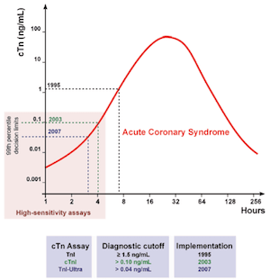
Injury versus infarction
Myocardial injury = any troponin elevation. Myocardial infarction = injury plus ischemia plus a rising or falling pattern. Troponin can be chronically elevated in chronic kidney disease, heart failure and structural heart disease — never interpret a single value out of context.
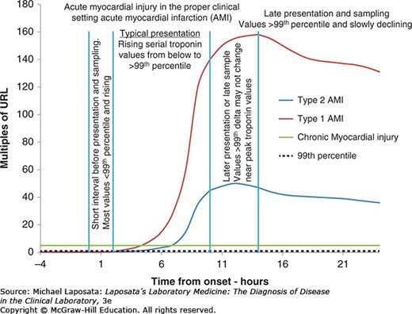
Advantages over creatine kinase-MB: very high specificity for myocardial injury, earlier rise and longer elevation (a wider window for diagnosis and treatment), useful early risk stratification in unstable angina. No longer used for cardiac evaluation: creatine kinase-MB, myoglobin, lactate dehydrogenase.
The natriuretic peptides
Cardiomyocytes secrete pro-BNP in response to stretch; it is cleaved into active BNP (B-type natriuretic peptide) and inert NT-proBNP (N-terminal pro B-type natriuretic peptide). Neither is 100% specific for heart failure; neither is a stand-alone test — use with clinical assessment and an echocardiogram if indicated.
| Factor | Effect on natriuretic peptide |
|---|---|
| Age | Rises by decade |
| Sex | Women higher |
| Obesity | Falsely low |
| Renal function | Inverse with filtration rate: worse kidneys, higher level |
Reference ranges vary by assay (BNP cutoff is given as under 100 ng/L; NT-proBNP is age-stratified and based on renal function). Levels rise linearly with heart failure severity.
C-reactive protein
Rises quickly with inflammation and falls rapidly once it resolves. Raised by acute processes (plaque rupture, trauma), chronic ones (atherosclerosis, heart failure, acute coronary syndrome, autoimmune disease, diabetes, insomnia, obesity, cancer), mildly in women, older adults and smokers, and highest in bacterial infection. Lowered by NSAIDs (nonsteroidal anti-inflammatory drugs), statins, interleukin-6 receptor antagonists, GLP-1 (glucagon-like peptide-1) agonists and lifestyle change. Benefits: cheap, non-invasive, widely available including point of care, well researched, predictive. Pitfall: not cardiac specific.
| C-reactive protein (general) | Typical meaning |
|---|---|
| Under 0.3 mg/dL | Normal |
| 0.3–1.0 mg/dL | Normal or minor: obesity, pregnancy, diabetes, common cold, sedentary life, smoking |
| 1.0–10.0 mg/dL | Moderate: rheumatoid arthritis, lupus, autoimmune disease, malignancy, infarction, pancreatitis, bronchitis |
| Above 10.0 mg/dL | Marked: acute bacterial or viral infection, vasculitis, major trauma |
| Above 50.0 mg/dL | Severe: generally acute bacterial infection |
High-sensitivity C-reactive protein is a technique, not a different test: more precision at low levels, designed for healthy people, used for cardiovascular risk stratification. Level is directly proportional to risk; high levels are an independent risk factor for heart failure and cardiac mortality. Risk tiers (note the unit is mg/L): under 1 low · 1–3 moderate · above 3 high. It feeds the Reynolds Risk Score, a 10-year cardiovascular risk estimate for women over 45 (slide 21).
9.2 · Objective b — Indications for ordering cardiac biomarkers
| Situation | Order |
|---|---|
| Suspected acute coronary syndrome / acute chest pain | Serial high-sensitivity troponin, first-line; look for a rising or falling pattern. The first value also carries prognostic weight. |
| Suspected heart failure / dyspnea triage | BNP (B-type natriuretic peptide) or NT-proBNP; also prognostic after acute coronary syndrome |
| Skeletal muscle injury, statin myopathy, rhabdomyolysis | Creatine kinase (not troponin) |
| Refining atherosclerotic risk in select primary-prevention patients | hs-CRP (high-sensitivity C-reactive protein) — never for acute diagnosis |
| When NOT to order | Routine natriuretic peptides in healthy people; creatine kinase-MB or myoglobin for infarction |
Troponin applications: unstable angina (normal = no injury; raised = injury, so stratify and consider revascularization) · early rule-out and early rule-in, including small infarctions · risk stratification in acute coronary syndrome · infarct size (late elevation at 4 weeks is inversely related to left ventricular ejection fraction) · reocclusion and reinfarction · procedural infarction.
| Procedural infarction | Troponin criterion |
|---|---|
| Type 4a (percutaneous coronary intervention) | More than 5 times the 99th percentile limit |
| Type 4b | At least one value above the 99th percentile limit |
| Type 5 (coronary artery bypass grafting) | More than 10 times the 99th percentile limit |
Natriuretic peptide applications: rule-out of new heart failure · monitoring the course · risk stratification (cardiovascular mortality, readmission). Slide 14 also lists guiding therapy; titrating treatment to the peptide level has not been shown to improve outcomes, so learn it as the weakest of the four.
Also tested
- Troponin beyond first diagnosis. Troponins also detect reocclusion and reinfarction, and procedure-related infarction, such as returning chest pain after a stent.
9.3 · Objective c — Indications for ordering a lipid profile
Why: baseline documentation, atherosclerotic risk estimation, and guiding or monitoring lipid-lowering therapy — in nearly all adults.
| Question | Answer |
|---|---|
| Fasting or not? | Nonfasting is acceptable for most. Fasting when triglycerides are 400 mg/dL or above, a triglyceride disorder is known or suspected, or there is a family history of premature atherosclerotic disease or genetic dyslipidemia. |
| Children | Screen at ages 9–11; from age 2 with a family history of premature disease, severe hypercholesterolemia or familial hypercholesterolemia |
| Adults | Again at 19, then roughly every 5 years, more often with risk factors |
| On therapy | Recheck 4–12 weeks after starting or changing a dose, then every 6–12 months |
| Lipoprotein(a) | Measure at least once in all adults |
Also tested
- Apolipoprotein B monitoring. It is a modifiable, treatment-responsive marker, so it is used repeatedly to guide and monitor lipid-lowering therapy, unlike lipoprotein(a), which is fixed and measured once.
9.4 · Objective d — Analyzing a lipid profile
| Component | Measured or calculated | Desirable / lower risk | Actionable |
|---|---|---|---|
| Total cholesterol | Measured | Under 200 mg/dL | Very high values raise familial hypercholesterolemia scoring |
| LDL-C (low-density lipoprotein cholesterol) | Calculated | Risk-based goal: under 100, 70 or 55 mg/dL | 190 mg/dL or above: statin regardless of risk; evaluate for familial hypercholesterolemia |
| Non-HDL-C (non-high-density lipoprotein cholesterol) | Calculated | Risk-based goal: under 130, 100 or 85 mg/dL | Tracks with the LDL-C goals |
| HDL-C (high-density lipoprotein cholesterol) | Measured | Higher generally favorable | A marker, not a treatment target |
| Triglycerides | Measured | Under 150 mg/dL | 150+ risk enhancer · 500+ severe, pancreatitis risk · 1000+ extreme |
| ApoB (apolipoprotein B) | Measured | Under 90 (goal under 70 or 55 by tier) | Use with triglycerides 150+, diabetes, or LDL-C under 70 to find residual risk |
| Lipoprotein(a) | Measured once | Under 125 nmol/L (about 50 mg/dL) | 125+ risk enhancer · 250+ about double risk · 430+ comparable to heterozygous familial hypercholesterolemia |
The teaching point on this table: adult LDL-C and non-HDL-C have no single normal value — the goal depends on the patient’s risk tier — whereas triglyceride, apoB and lipoprotein(a) thresholds are more fixed. An elevated lipoprotein(a) is found in about 20% of people, with about 40% higher relative risk. Lipoprotein(a) and apoB share a panel because each lipoprotein(a) particle adds to the apoB count.
The deck states the lipoprotein(a) doubling point two ways. Slide 40: 250 nmol/L (about 100 mg/dL) or above is 2 or more times the risk. Slide 44: about 80–100 mg/dL roughly doubles risk. Neither is worth memorizing, and no question here turns on which is right.
| Pediatric (mg/dL) | Acceptable | Borderline | Abnormal |
|---|---|---|---|
| Total cholesterol | Under 170 | 170–199 | 200 or above |
| Triglycerides, 0–9 years | Under 75 | 75–99 | 100 or above |
| Triglycerides, 10–19 years | Under 90 | 90–129 | 130 or above |
| HDL-C | Above 45 | 40–45 | Under 40 |
| LDL-C | Under 110 | 110–129 | 130 or above |
| Non-HDL-C | Under 120 | 120–144 | 145 or above |
Also tested
- Non-HDL-C. It equals total cholesterol minus HDL-C (210 minus 50 is 160 mg/dL), is followed against a risk-based goal, and needs no triglyceride value and costs nothing extra.
- Favorable lipid profile. Total cholesterol below 200 mg/dL and triglycerides below 150 mg/dL, with a high HDL-C, is generally a favorable profile.
- Triglyceride level and risk. Triglycerides of 150 mg/dL or above mean increased atherosclerotic risk and act as a risk enhancer for atherosclerotic disease; severe hypertriglyceridemia begins at 500 mg/dL.
- Elevated lipoprotein(a). It is a largely fixed genetic risk factor measured once; elevation prompts earlier and more intensive management of every other modifiable risk factor, since statins do not lower it.
9.5 · Objective e — Lipid testing in cardiovascular risk assessment
Lipid values feed a 10-year atherosclerotic risk estimate — the PREVENT (Predicting Risk of cardiovascular disease EVENTs) equations in the 2026 guideline — and the estimate drives treatment intensity. The framework is Calculate → Personalize → Reclassify.
![Flowchart titled CPR Framework for Risk Evaluation. Estimating 10-year risk with PREVENT splits into low risk under 3 percent, borderline 3 to under 5 percent, intermediate 5 to under 10 percent and high risk 10 percent or above. Every tier discusses the risk estimate and therapy options with the patient; borderline also evaluates risk enhancers. Borderline and intermediate may consider a coronary artery calcium score if there is uncertainty. Low risk ends in lifestyle modification, borderline in lifestyle plus potential lipid-lowering therapy, and intermediate and high in lifestyle and lipid-lowering therapy.](pdm-exam-2-study-guide-images/9-cpr-framework.jpg)
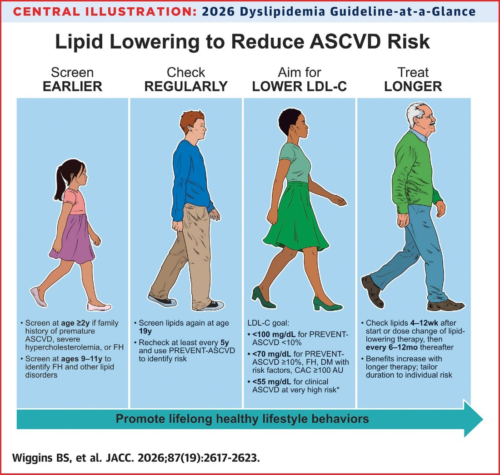
Lipoprotein(a) in risk assessment: a largely fixed genetic factor measured once. Elevation prompts earlier and more intensive management of every other modifiable risk factor — statins do not lower it. ApoB, by contrast, is modifiable and used repeatedly to guide and monitor therapy.
Also tested
- Fasting for a lipid profile. Nonfasting samples are acceptable for most people. Fasting is reserved for triglycerides of 400 mg/dL or above, triglyceride disorders, or a family history of premature disease or genetic dyslipidemia.
- Childhood lipid screening. A lipid screen is indicated at ages 9 to 11, even without a family history, to identify familial hypercholesterolemia and other lipid disorders; lipids are screened again at 19.
- Rechecking lipids after starting therapy. Check lipids in 4 to 12 weeks after starting or changing the dose of lipid-lowering therapy, then every 6 to 12 months.
- Early lipid screening with a family history. Screening at age 2 or older is recommended with a family history of premature atherosclerotic disease, severe hypercholesterolemia or familial hypercholesterolemia.
9.6 · Objective f — Lipids and lipoproteins in atherosclerosis
Cholesterol and triglycerides are the major lipids; they are insoluble and travel inside lipoproteins. A lipoprotein = lipid core (cholesterol esters + triglycerides) + phospholipid shell + apolipoproteins.
| Lipoprotein | Main cargo | Apolipoprotein | Atherogenic? |
|---|---|---|---|
| Chylomicron | Dietary triglyceride | apoB-48 | Remnants are |
| VLDL (very low-density lipoprotein) | Triglyceride | apoB-100 | Yes (remnants) |
| IDL (intermediate-density lipoprotein) / remnants | Cholesterol + triglyceride | apoB-100 | Yes |
| LDL (low-density lipoprotein) | Cholesterol | apoB-100 | Yes — principal driver |
| Lipoprotein(a) | Cholesterol + apo(a) | apoB-100 + apo(a) | Highly atherogenic; genetic |
| HDL (high-density lipoprotein) | Cholesterol | apoA-I | No — reverse cholesterol transport (protective) |
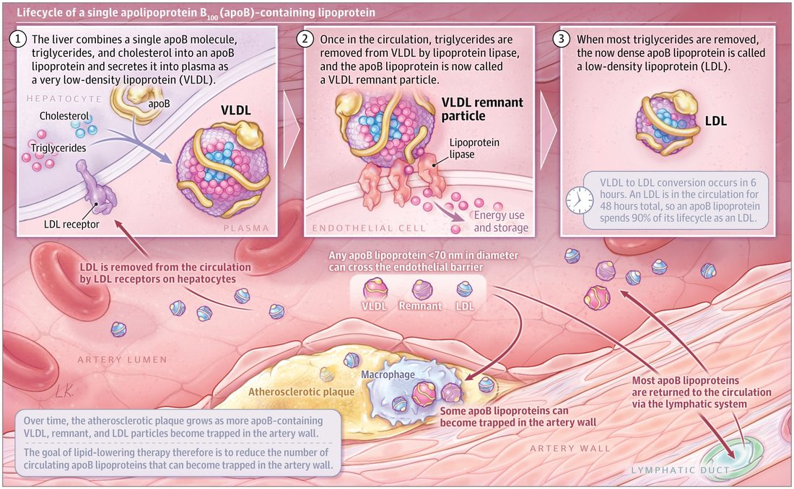
| Apolipoprotein | Made by | Found on / role |
|---|---|---|
| ApoB-48 | Intestine | Chylomicrons |
| ApoB-100 | Liver | VLDL (very low-density), IDL (intermediate-density) and LDL (low-density lipoprotein), and lipoprotein(a) — one per particle; not in HDL |
| ApoA-I | Liver and intestine | Major structural protein of all HDL |
| ApoA-II | — | Second most abundant HDL protein; on about two-thirds of HDL |
| ApoC, apoC-III, apoA-V | — | Regulate triglyceride metabolism |
| ApoE | — | Critical in triglyceride clearance |
| Apo(a) | — | Forms lipoprotein(a) |
Lipoprotein(a) is an LDL-like particle with apo(a) bound to apoB-100: more than 90% genetic, stable over life, no fasting, one lifetime measurement generally enough. Repeat is reasonable in women after menopause if the earlier level was borderline. Test anyone with a personal or family history of atherosclerotic disease, with cascade testing through appropriate families. It is statin-resistant and more atherogenic than LDL.
LDL is the major cholesterol carrier and the primary prevention target; LDL-C and risk have a log-linear relationship. Remnant cholesterol and triglyceride-rich lipoproteins carry residual risk.
Also tested
- Lipoprotein(a) testing. The level is more than 90% genetically determined, so testing is indicated with a personal or family history of atherosclerotic disease and extends to first-degree relatives through cascade testing in appropriate families.
- Lipoprotein(a) measurement. It generally needs measuring once in a lifetime: it is more than 90% genetically determined and stable over life, and needs no fasting.
- Formation of LDL. The liver secretes triglyceride-rich VLDL (very low-density lipoprotein); lipoprotein lipase strips triglyceride to give a remnant (IDL, intermediate-density lipoprotein) and then cholesterol-rich LDL (low-density lipoprotein), the same apolipoprotein B particle at different stages.
9.7 · Objective g — Measured and calculated components
| Measured directly | Calculated |
|---|---|
| Total cholesterol, HDL-C, triglycerides (and apoB, lipoprotein(a) when ordered) | LDL-C — an estimate, not a measurement, on a standard panel · non-HDL-C |
| Estimate | How | Note |
|---|---|---|
| Friedewald LDL-C | Total cholesterol − HDL-C − (triglycerides ÷ 5) | Cannot be used when triglycerides are 400 mg/dL or above |
| Martin/Hopkins or Sampson/NIH (National Institutes of Health) | Newer equations | Preferred, especially with triglycerides 150+ or low LDL-C |
| Non-HDL-C | Total cholesterol − HDL-C | Captures every atherogenic apoB lipoprotein; no added cost; a better predictor than LDL-C; recommended for routine reporting |
Worked the way the deck’s own practice slide asks. A panel with total cholesterol 200 mg/dL, HDL-C 50 mg/dL and triglycerides 100 mg/dL: non-HDL-C = 200 − 50 = 150 mg/dL; Friedewald LDL-C = 200 − 50 − 20 = 130 mg/dL. This arithmetic is examinable: she worked slide 43 in class as “two calculations, and then … interpret” (178 − 62 − 18 = 98; 178 − 62 = 116; both in range for a low-risk patient, “not even close” for a high-risk one). Triglycerides of 400 mg/dL or more: “we cannot trust that calculation.”
Also tested
- Measured and calculated lipid components. Total cholesterol, HDL-C and triglycerides are measured; LDL-C (low-density lipoprotein cholesterol) and non-HDL-C are calculated, so the LDL-C on a standard report is an estimate. HDL-C is high-density lipoprotein cholesterol.
10 · Coagulation and Hemostasis Testing
Lauren Reynolds, MSPA, PA-C · 30 September 2026
Instructional Objectives
Topic Outline 10: Coagulation and Hemostasis Testing
- Define: i. Hemostasis · ii. Primary hemostasis · iii. Secondary hemostasis · iv. Thrombus · v. Fibrinolysis · vi. Fibrin degradation products · vii. D-dimer
- Discuss diagnostic testing for: i. Primary hemostasis · ii. Secondary hemostasis · iii. Fibrinolysis
- Compare and contrast laboratory studies used to evaluate bleeding and thrombotic disorders.
- Describe laboratory findings associated with platelet abnormalities.
- Discuss indications for ordering coagulation studies.
- Interpret common coagulation studies including: i. PT · ii. INR · iii. aPTT · iv. D-dimer
The one-line frame for the whole lecture. Hemostasis is the balance between clot formation and clot breakdown, and each laboratory test evaluates one part of that balance. Platelets make the plug (primary hemostasis), coagulation factors make the fibrin (secondary hemostasis), plasmin takes the clot apart (fibrinolysis). Decide which phase you are asking about, and the test follows.
Numbers: the values below are here so you can read a result, not to memorize — reference ranges vary by laboratory and are supplied on her exams (her standing rule from Lecture 1). Nothing in this lecture asks you to calculate.
| She said | So |
|---|---|
| “I’m gonna highlight this because … this is important for these three phases” — platelet activation, adhesion and aggregation; coagulation “where we stabilize that platelet plug”; and the breakdown, fibrinolysis. [part 1, 10:54–11:58] Her picture: platelets are the bricks, the clotting factors are the mortar. | Know the three phases and which test belongs to which (10.1). The brick-and-mortar picture is her memory aid, not a slide. |
| Bleeding and clotting use “the same tests … they are a spectrum.” “If somebody’s at the low end of the range they’re more susceptible to clotting, if somebody’s at that high end of the range they’re more susceptible to bleeding.” [part 1, 6:53–7:29] | The INR places a patient on the clot-to-bleed spectrum (10.3). Order the same workup whichever problem you suspect, then read the pattern. |
| Von Willebrand disease “is the most common inherited bleeding disorder … you want to lock that in.” [part 1, 26:49 and 29:20] Such a patient should avoid aspirin and ibuprofen- or naproxen-containing products. | 10.2. The deck’s own table shows aspirin and nonsteroidal anti-inflammatory drugs give an abnormal platelet function result (10.6); the “avoid them” advice is her clinical addition. |
| The INR “is probably the number that you will use a lot more … two to three is our Goldilocks zone.” “The lower the INR the greater risk of clotting, the higher INR greater risk of bleeding.” [part 1, 40:56–45:45] | On warfarin, low = clot risk, high = bleeding risk (10.3). The 2.0–3.0 goal is given; a valve-related goal of 2.5–3.5 was her aside. |
| “D-dimer is really only helpful if you can reasonably expect it to come back negative.” And “d-dimer just tells us clot is happening, doesn’t tell us where” (as C-reactive protein says only that inflammation is happening). After surgery it will be raised, so “a d-dimer is not going to add any information.” [part 1, 19:24 and 45:42–48:29] | A normal D-dimer helps exclude thrombosis; a raised one is nonspecific and never localizes (10.4). |
| Platelet tiers: below 100,000 is thrombocytopenia; “less than 20,000 … spontaneous bleeding … petechiae”; “less than 10,000 is scary low.” The bleeding-gums patient “you would expect to see a platelet count of less than 50,000.” [part 2, 6:35–9:03] | The tier table in 10.6 is examinable as written. Her added transfusion advice for surgery below 50,000 is clinical practice, not a slide. |
| “If you get labs back and … the PTT is abnormal, and you’re like, I wonder if something’s wrong with the platelets, you’ve missed the boat … you have to be thinking clotting factors.” Normal PT and PTT with bleeding: “think platelets.” [part 2, 12:32 and 18:03] | Where to begin: an abnormal clotting time points to secondary hemostasis; normal clotting times with bleeding point to platelets (10.8). |
| “A lot of what we do here is pattern recognition.” Disseminated intravascular coagulation: “nothing is normal.” [part 2, 4:43–5:35; part 1, 54:10] | Read results as patterns (10.8). Disseminated intravascular coagulation is the pattern with every value abnormal. |
| With only the PTT abnormal “our next step is to make sure are they on heparin … let’s get a fibrinogen.” [part 2, 9:19–9:45] | The first two steps of the isolated prolonged aPTT algorithm (10.8). |
| Platelet function abnormal with everything else normal: “you need to think meds”; ask about over-the-counter products, because “do you take Excedrin Migraine? … you’re on aspirin.” [part 2, 13:28–14:12] | Normal count and clotting times with abnormal platelet function = aspirin, nonsteroidal drugs, uremia (10.6). |
| A normal PT/INR “does not mean that somebody doesn’t have a coagulopathy”; low-molecular-weight heparin and the direct oral anticoagulants “they’re not going to change your PT, PTT,” so you cannot tell whether the patient is taking them and need not monitor them routinely. [part 1, 50:31–53:36] | The caveats in 10.3. The deck (slide 24) also lists an oral factor Xa inhibitor among causes of a long PT, so treat a normal PT as never proving the drug is absent. |
| Screening versus diagnosis: factor assays “you’re not going to order these as part of your screening, these would be diagnostic type tests.” [part 1, 23:36–23:54] | Screen first (count, smear, PT/INR, aPTT, fibrinogen), then assay the specific factor the pattern points to. |
No de-emphasis. Neither transcript contains a single “you don’t need to know this” or “not on the exam” statement, so nothing is withheld from the quizzes. Only three cues were flagged aloud: the three phases, and von Willebrand disease twice.
Where her time went (distinct minutes of speech in which a subject was discussed, out of 84): platelets 38, prothrombin time and INR 25, the partial thromboplastin time and the pathways 20, D-dimer 9, disseminated intravascular coagulation 8, aspirin and other platelet-active drugs 8, platelet count tiers 7, von Willebrand disease 6, bleeding time 5, fibrinogen 5, mixing studies 1. Mixing studies and the two algorithm slides got almost no spoken time, so they carry less weight in the quizzes, but the deck lists them and they stay in this guide.
Where the slide and the recording differ. Four spoken statements differ from the deck or from current practice; this guide teaches whichever is accurate. (1) “Factor seven deficiency will prolong PTT but does not necessarily cause bleeding” [part 2, 21:38]; the slides (24 and 32) say factor XII prolongs the aPTT without bleeding, while factor VII deficiency prolongs the PT. Both transcripts record “seven,” so this is a slip, not a transcription error. (2) To confirm a low count, “make sure that the preservative didn’t necessarily contain heparin” [part 2, 23:11]; slide 34 says confirm it in a citrated or heparinized tube because the ethylenediaminetetraacetic acid tube is what clumps platelets. (3) She described the smear with platelet clumps as platelets “being activated … used up” [part 1, 35:16]; the slide captions it spurious thrombocytopenia, a counting artifact. (4) “Even if … the person is absolutely normal health wise … you’re still ordering these as a part of your preoperative risk assessment” [part 1, 22:34–22:46]; slide 8 says mild or moderate prolongation does not predict bleeding in a nonbleeding patient, and routine screening with no bleeding history is not well supported, so nothing here is keyed to “always order.”
10.0 · The wall-building crew: a memory aid for hemostasis and its tests
This is one story to hang the deck’s facts on. Every role maps to something the deck states (slide numbers in brackets). Where the story goes further than the deck, it is listed under “where it breaks”. When a question asks for a fact, answer from 10.1 onward, not from the story. The anchor is the lecturer’s own picture: platelets are the bricks and the clotting factors make the mortar (the fibrin) that holds them together [recording, part 1, about 12:05 to 12:41]. This story keeps her bricks and mortar and adds the rest of the crew around them.
The site. A blood vessel is a flood wall beside a river, and bleeding is a breach in it. Hemostasis is a balance between a repair crew and a demolition crew [4]. (The deck says only “balance between clot formation and clot breakdown”; that the repair is taken down once the wall is sound is the story.) There are three phases, three crews, and each laboratory test evaluates one part of that balance [4].
| Player | On the site | What the deck states |
|---|---|---|
| Platelets | The bricks: stack up to plug the breach fast, but a wall of bricks alone gives way to a flood | Primary hemostasis is a platelet plug at the site of injury [6]; the count is 140,000 to 400,000 per microliter in adults [13] |
| von Willebrand factor | The scaffolding hooks that bolt the first bricks to the bare wall | Tethers platelets to exposed collagen; von Willebrand disease is the most common inherited bleeding disorder, tested with antigen, activity and a factor VIII level [4, 6, 11] |
| Glycoprotein IIb/IIIa and fibrinogen | The clips that join brick to brick; the same sacks of powder that become mortar also serve as the staples | Platelets aggregate through glycoprotein IIb/IIIa with fibrinogen bridging; fibrinogen is also the substrate thrombin converts to fibrin [4, 6, 21] |
| Prostacyclin | The non-stick coating on the healthy stretch of wall, so bricks do not pile up where nothing is broken | Listed as an antiplatelet factor [10]. That is all the deck says; the coating is the story |
| Clotting factors | The mortar crew: the workers who mix and apply the mortar (prothrombin, at least, is made in the liver). The vitamin K-dependent four (II, VII, IX, X) can only work while licensed | Prothrombin is made by the liver and depends on vitamin K intake and absorption; vitamin K deficiency hits II, VII, IX and X [5, 19]. Warfarin (a vitamin K antagonist) is monitored with the international normalized ratio [8, 24] |
| Tissue factor and factor VII | The emergency call from the broken wall itself (the outside alarm) | The extrinsic, tissue factor pathway [5, 12] |
| Factors XII, XI, IX, VIII | The crew’s own chain of command inside the yard (the inside chain) | The intrinsic pathway [5, 12]. Hemophilia A is VIII, B is IX and C is XI [5] |
| Factor X (with V) | The foreman both calls reach; everything after him is the shared work | The common pathway is X, V, II, I and XIII [5] |
| Thrombin (factor IIa) | The master mixer: turns powder into wet mortar, and rings for more crew (factors V, VIII and XIII) while he works | Thrombin converts fibrinogen to fibrin and also activates VIII, V and XIII [5, 6] |
| Fibrin and factor XIII | Fibrin is the wet mortar mesh between the bricks; factor XIII is the hardener that sets it so it will not wash out | Secondary hemostasis forms insoluble, cross-linked fibrin; thrombin also activates XIII [5, 6] |
| Antithrombin III, protein C, protein S | The safety inspectors who hold the crew in check. Without them, building runs on and the road gets walled shut | Their deficiencies are primary causes of hypercoagulable states [10]. All three run low in disseminated intravascular coagulation [30] |
| Heparin and dabigatran | Saboteurs: the mortar is slow to set. The lupus anticoagulant is a saboteur that jams the lab’s inside timer but does not cause bleeding | Heparin and dabigatran raise the activated partial thromboplastin time (aPTT) and the thrombin time; the lupus anticoagulant and factor XII deficiency prolong the aPTT without bleeding [24, 32] |
| Tissue plasminogen activator, plasminogen, plasmin | The demolition crew: plasminogen waits in the truck, the activator calls it out, and plasmin tears down the hardened mortar | Fibrinolysis is the enzymatic breakdown of fibrin: tissue plasminogen activator makes plasmin, which degrades it [4, 7] |
| Alpha-2 antiplasmin and plasminogen activator inhibitor 1 | The demolition crew’s brakes. Missing brakes means good walls get torn down: bleeding with normal screens (the story’s reading of the deck’s “inhibitors of the fibrinolytic system”) | Alpha-2 antiplasmin deficiency (a deficiency of the fibrinolytic system’s inhibitors, slide 28) is on the normal-screens-with-bleeding list, worded on slide 32 as “alpha-2-antiplasmin deficiency or impaired fibrinolysis”; the two inhibitors have their own assays [28, 32] |
| Fibrin degradation products and D-dimer | The rubble. D-dimer is the rubble that only hardened mortar leaves: it takes the mixer (thrombin), the hardener (XIII) and the demolition crew (plasmin) to make it | D-dimer is produced by thrombin, activated factor XIII and plasmin; its presence confirms both thrombin and plasmin generation, and it is a nonspecific marker of fibrin breakdown [7, 22] |
| Fibrin monomers | Loose, unhardened mortar blobs on the ground (the story’s picture for “thrombin activity”) | Positive indicates thrombin activity and is consistent with intravascular coagulation; negative does not exclude it [22] |
The inspections, as site checks.
| Test | The site check | What the deck states |
|---|---|---|
| Platelet count, mean platelet volume, smear | Count the bricks, check they are all the same size, and look at them under a lens | [11, 13, 34]. Platelets clumped in the tube make a false low count (spurious thrombocytopenia, slide 14): the bricks are stuck together in the delivery crate. Confirm in a citrated or heparinized tube [14, 34] |
| Bleeding time | Time how long a small breach takes to be bricked over | Only useful if the platelet count is above 100,000, because a short supply of bricks lengthens it on its own [16] |
| Platelet function testing | Do the bricks grip? Aspirin and the nonsteroidal drugs are grease on the bricks | Abnormal in von Willebrand disease types 2 and 3, uremia and drugs. With uremia and aspirin or the nonsteroidal drugs the count, prothrombin time and aPTT are normal; von Willebrand disease can also lengthen the aPTT [11, 29, 34] |
| Prothrombin time | Shout the outside alarm into a tube of the patient’s plasma and time how long the mortar takes to set | Tissue factor added; 11 to 13 seconds; extrinsic plus common pathway [19] |
| International normalized ratio | A calibrated stopwatch, so every site in every city reads the same time | Standardizes the prothrombin time between laboratories; 2.0 to 3.0 on warfarin: low = clot risk, high = bleeding risk [20] |
| aPTT (activated partial thromboplastin time) | Start the crew’s own inside chain with an activator and time how long the mortar takes to set | Phospholipid activator; 21 to 35 seconds; intrinsic plus common pathway [18] |
| Thrombin time | A check of the last step only: can the powder still become mortar? | Raised by heparin, dabigatran, and low or abnormal fibrinogen [24, 28, 29]. The deck gives no definition of the test, so the “last step” reading is the story’s |
| Fibrinogen level | The sacks of powder in the warehouse | 2.0 to 4.0 grams per liter; below 0.5 can cause hemorrhage after traumatic surgery; above 7.0 is a risk for coronary and cerebrovascular disease [21] |
| Mixing study | Bring in a spare crew (normal plasma) and re-run the clock. If the time corrects, a worker was missing; if it does not correct, a saboteur is on site | Correction suggests a factor deficiency; no correction suggests an inhibitor [12] |
| Factor assays | The roll call, to find which worker is absent. Done to confirm, not to screen | [12, 21] |
| D-dimer | Sweep the street for rubble. No rubble helps exclude a wall having been built and torn down; rubble alone never says which wall | High negative predictive value; raised in acute thrombosis, disseminated intravascular coagulation, pregnancy and many acute illnesses [22, 24] |
Reading the patterns as site reports.
- Only the prothrombin time is long: the outside alarm route is broken. Think factor VII, early vitamin K deficiency, liver disease (the factory is damaged) or warfarin (the licenses are revoked) [24, 32].
- Only the aPTT is long: the inside chain is broken. Think VIII, IX or XI, von Willebrand disease (the deck’s table shows its aPTT raised through factor VIII [29]), heparin or an inhibitor. A missing factor XII is a chain member whose absence slows the lab’s timer but not the real repair: no bleeding [24, 32].
- Both are long: the shared foreman or later is out (X, V or II), or the whole crew is down: disseminated intravascular coagulation, liver disease, severe vitamin K deficiency [28, 32].
- Both are normal, yet the patient bleeds: the mortar is fine, so look at the bricks (platelet disorder, mild von Willebrand disease), the hardener (factor XIII) or the demolition brakes [32].
- Disseminated intravascular coagulation: the repair and demolition crews run wild everywhere at once. Bricks used up (platelets down), powder used up (fibrinogen down), mortar slow to set (prothrombin time and aPTT up) and rubble everywhere (D-dimer up). The lecturer’s phrase: “nothing is normal” [24, 30].
- Acute thrombosis: a wall built in the middle of the road. Only the rubble sign (D-dimer) is up, and it is nonspecific [24].
- Too few bricks: below 50,000 the patient bruises easily and bleeds with trauma; below 20,000 the wall leaks by itself (petechiae); below 10,000 the leak can be in the brain [26].
Where the analogy breaks
- Bricks and mortar are not two separate crews in the body. Thrombin activates platelets as well as factors V and VIII (the amplification step in 10.1), so the crews feed each other. The story lines them up in order only because the deck lists the three phases in order.
- The inside chain and the outside alarm are the two arms of the deck’s diagram, and the two tubes that test them. The cell-based model in 10.1 (initiation, amplification, propagation) is how the body is described as running it. Use the story to remember which test checks which arm, not to describe the body.
- Saboteurs get effects, not machinery. The deck says heparin and dabigatran prolong the aPTT and the thrombin time; it does not say how, so the story does not either. The same goes for the safety inspectors: the deck lists them and their deficiency states, not their mechanism.
- The story lines up roles the deck does not. The lecturer calls the clotting factors the mortar; here they are the crew that mixes it and fibrin is the mortar. Fibrinogen is both the staples between bricks and the sacks of powder, and thrombin (factor IIa) is both a crew member and the master mixer. Von Willebrand factor is a brick-side hook, yet von Willebrand disease also appears in the inside-chain and normal-screens patterns, because the deck ties the disease to factor VIII (slides 5, 29, 32). The deck says the lupus anticoagulant lengthens the lab timer without bleeding, but it is also tested in the clotting-disorder workup (slide 10), so it is a saboteur of the timer only.
- The platelet disorders with their own names are outside the story. Immune thrombocytopenia, thrombotic thrombocytopenic purpura, hemolytic uremic syndrome and heparin-induced thrombocytopenia are deferred by the deck to a later lecture [36].
- The numbers are the deck’s, and reference ranges vary by laboratory. Her standing rule is that ranges are supplied on the exam, so nothing here needs memorizing as a figure.
10.1 · Objective a — The seven terms
| Term | Definition | Read it this way |
|---|---|---|
| Hemostasis | The arrest of bleeding from an injured blood vessel | The finely tuned process that stops bleeding while preventing pathologic thrombosis. ★ Three overlapping stages: primary hemostasis, secondary hemostasis and fibrinolysis; three classic components: vasoconstriction, platelet plug formation and coagulation. |
| Primary hemostasis | Formation of a platelet plug at the site of vascular injury | von Willebrand factor tethers platelets to exposed subendothelial collagen through glycoprotein Ib; activated platelets release thromboxane A2 and granules, and aggregate through glycoprotein IIb/IIIa with fibrinogen bridging. |
| Secondary hemostasis | Formation of insoluble, cross-linked fibrin by activated coagulation factors, specifically thrombin | The coagulation cascade. In the cell-based model: initiation (tissue factor with factor VIIa activates IX and X, forming prothrombinase), amplification (thrombin activates platelets and cofactors V and VIII) and propagation (a burst of thrombin converts fibrinogen to fibrin). |
| Thrombus | A blood clot formed in situ within the vascular system that impedes blood flow | Once it has done its job it must be dissolved to restore the vessel. |
| Fibrinolysis | Enzymatic breakdown of fibrin in clots | Tissue plasminogen activator converts plasminogen to plasmin, which degrades fibrin. |
| Fibrin degradation products | Fragments released after plasmin-mediated degradation of fibrinogen or fibrin | Markedly elevated when fibrinolysis is activated, as in disseminated intravascular coagulation. |
| D-dimer | A degradation product of fibrin clots, produced by the action of three enzymes: thrombin, activated factor XIII and plasmin | A specific cross-linked fibrin degradation product. It exists only after fibrin has been formed, cross-linked and then broken down. |
![Three panels. Panel A, platelets and vessel wall adhesion and aggregation: von Willebrand factor binds exposed collagen and the platelet receptor glycoprotein IIb/IIIa, and platelets aggregate. Panel B, blood coagulation from fibrinogen to fibrin: factor Xa converts prothrombin to thrombin, and thrombin turns fibrinogen into a fibrin network at the platelet aggregate. Panel C, fibrinolysis: tissue plasminogen activator converts plasminogen to plasmin on the fibrin surface, and plasmin degrades the clot to fragments including D-dimer; factor XIII cross-links the fibrin.](pdm-exam-2-study-guide-images/10-three-phases.png)
![Coagulation pathway diagram. The intrinsic pathway runs factor XII to XI to IX to VIII with calcium. The extrinsic pathway runs tissue factor and factor VII. Both converge on the common pathway: factor X, with factor V, converts prothrombin (II) to thrombin (IIa), which converts fibrinogen (I) to fibrin (Ia); thrombin also activates factor XIII, which stabilizes the clot. Red letters mark factors involved in hemophilia A (VIII), hemophilia B (IX), hemophilia C (XI), von Willebrand disease (VIII) and vitamin K deficiency (II, VII, IX, X).](pdm-exam-2-study-guide-images/10-coagulation-pathway.png)
10.2 · Objective b.i — Testing primary hemostasis (platelets)
Primary hemostasis is tested with three groups of studies: counts and smears, von Willebrand studies and platelet function testing.
| Test | What it tells you | Reference / key point |
|---|---|---|
| Platelet count (from the complete blood count) | How many platelets there are | Adults 140,000–400,000 per microliter (1 cubic millimeter = 1 microliter); children 150,000–450,000. The deck defines thrombocytopenia as below 100,000 per microliter and thrombocytosis as above 350,000. |
| Mean platelet volume | The uniformity of size of the platelet population | Used in the differential diagnosis of thrombocytopenia. Normal 7.4–10.4 femtoliters in children and adults. |
| Peripheral blood smear | Platelet morphology: macrothrombocytopenia, gray platelets, neutrophil inclusions, clumps | Also the way to catch a false low count (below). |
| von Willebrand studies | von Willebrand factor antigen and activity, plus a factor VIII level | von Willebrand disease is the most common inherited bleeding disorder. |
| Platelet function testing | Whether platelets work | Light transmission aggregometry, lumiaggregometry, the PFA-100 (platelet function analyzer) and flow cytometry. |
| Bleeding time | Minutes for a standardized, superficial skin puncture to stop bleeding, performed at the bedside | Normal for most laboratories 3–10 minutes, varying with the method. Only useful if the platelet count is above 100,000 per microliter, because thrombocytopenia itself lengthens the time. |
★ von Willebrand disease is the most common inherited bleeding disorder, and it is evaluated with von Willebrand factor antigen, activity and a factor VIII level.
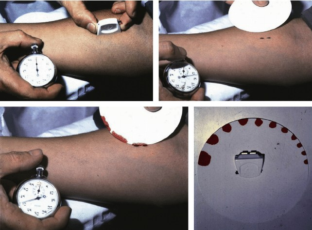
With a normal platelet count, a prolonged bleeding time means the platelets are not working well, a defect of primary hemostasis.
The deck and current practice differ on bleeding time. Slide 9 lists it among the five initial screening tests, and slides 16 and 17 describe how it is done. It is nonetheless a poorly reproducible test that has largely given way to platelet function analyzer testing, so learn it as what it measures and when it is meaningless (platelet count of 100,000 or below), not as a modern first-line test.
Do not trust a low count until the smear agrees
Extreme thrombocytosis (above 1,000 × 109 per liter) and thrombocytopenia can both cause bleeding. A low count should be confirmed in a citrated or heparinized tube to exclude pseudothrombocytopenia induced by EDTA (ethylenediaminetetraacetic acid, the anticoagulant in the usual purple-top tube), in which platelets clump.
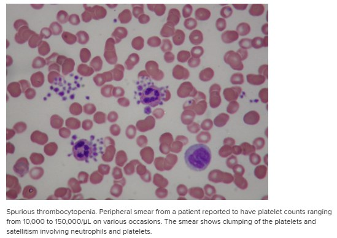
10.3 · Objective b.ii — Testing secondary hemostasis (coagulation factors)
Screening: PT (prothrombin time; the extrinsic or tissue factor pathway), aPTT (activated partial thromboplastin time; the intrinsic pathway), thrombin time and fibrinogen. Mixing studies follow when the PT or aPTT is prolonged; specific factor assays confirm.
| Test | What it measures | Pathway | Reference (varies by laboratory) | Prolonged or abnormal means |
|---|---|---|---|---|
| PT (prothrombin time) | Time for a fibrin clot to form in a lab tube when tissue factor is added to the patient’s plasma. Prothrombin is made by the liver and depends on vitamin K intake and absorption. | Extrinsic (plus common) | 11–13 seconds | Deficiency of extrinsic (factor VII) or common pathway factors; liver disease, vitamin K deficiency, warfarin |
| INR (international normalized ratio) | The PT expressed as a comparative rating (the observed PT ratio adjusted for the reagent used), so results can be standardized from lab to lab | Same as PT | 0.8–1.2; on anticoagulation the target varies, typically 2.0–3.0 | ★ On warfarin: low = clot risk, high = bleeding risk. Off warfarin: a bleeding disorder, a clotting disorder, liver disease or vitamin K deficiency. |
| aPTT (activated partial thromboplastin time) | Time for a fibrin clot to form when a special phospholipid activator is added to the patient’s plasma | Intrinsic (plus common) | 21–35 seconds; above 70 seconds signifies spontaneous bleeding | Deficiency of intrinsic factors (VIII, IX, XI); heparin; dabigatran; an inhibitor; lupus anticoagulant or factor XII deficiency |
| Thrombin time | Listed by the deck as a screening test of secondary hemostasis (it gives no definition) | — | (no value given) | Raised by heparin and dabigatran, by low or abnormal fibrinogen and in disseminated intravascular coagulation; normal in a simple factor deficiency (Table 4-10 in 10.8) |
| Fibrinogen | The substrate that thrombin converts to fibrin; the Clauss assay is preferred over a PT-derived value | — | 2.0–4.0 grams per liter | Low = bleed, high = clot. Below 0.5 g/L can cause hemorrhage after traumatic surgery; above 7.0 g/L is a significant risk for coronary and cerebrovascular disease. Elevated results indicate tissue damage or inflammation. |
| Mixing study | Patient plasma mixed with normal plasma, then the prolonged test repeated | — | — | Correction = a factor deficiency. No correction = an inhibitor. |
| Factor assays | The level of one specific factor | — | — | Confirm the deficiency. Deficiencies may be inherited or acquired, and acquired disorders can raise or lower factor levels. |
Three wording points where the slide is loose. (1) The INR adjusts for the international sensitivity index of the thromboplastin reagent; slide 20 calls it the “International Reference Thromboplastin.” Either way, the purpose is the same: make PT results comparable between laboratories. (2) Slide 22 titles its second entry “fibrin monomers (fibrin split products),” but the two are different things: fibrin degradation products come from plasmin (10.1), while the fibrin-monomer result described on that slide reflects thrombin activity (10.4). (3) The deck itself does not define thrombin time beyond listing it; it is treated here only by what the slides state about it.
Also tested
- International normalized ratio. It adjusts the prothrombin time ratio so results can be standardized from laboratory to laboratory.
Caveats to coagulation studies
- A normal PT/INR does not rule out a coagulopathy.
- Low-molecular-weight heparin and most direct oral anticoagulants may not derange the PT or aPTT yet still raise bleeding risk; routine monitoring of the direct oral anticoagulants is not required. (Slide 24 does list an oral factor Xa inhibitor among causes of a prolonged PT, so a normal result never proves the drug is absent.)
- Pregnancy shifts reference ranges: by the third trimester the PT, aPTT and thrombin time shorten, and fibrinogen and D-dimer rise.
- Mild or moderate PT/aPTT prolongation does not predict bleeding in a patient who is not bleeding (slide 8), so a mildly abnormal screen is not a forecast of bleeding.
10.4 · Objective b.iii — Testing fibrinolysis (the breakdown products)
| Test | What a result means |
|---|---|
| D-dimer (normal below 250 micrograms per liter in the deck) | Produced only by plasmin acting on cross-linked fibrin, so its presence confirms that both thrombin generation and plasmin generation have occurred. It is a nonspecific marker of fibrin breakdown: elevated in acute thrombosis, disseminated intravascular coagulation, pregnancy and many acute illnesses. ★ Its strength is a high negative predictive value: a normal result helps exclude thrombosis. |
| Fibrin monomers | A positive test indicates thrombin activity and is consistent with intravascular coagulation. A negative test does not mean intravascular coagulation is absent. A positive result can also occur in some cases of severe liver disease and in inflammatory disorders. |
Other specific tests of fibrinolysis appear in the inherited-bleeding algorithm (10.8): euglobulin clot lysis time (screening) and assays for alpha-2 antiplasmin and plasminogen activator inhibitor 1 when the fibrinolytic system’s inhibitors are deficient.
10.5 · Objective c — Bleeding versus thrombotic workups
Five primary screening tests are done first when a coagulation disorder is suspected: platelet count, size and shape; bleeding time; aPTT; PT; fibrinogen level. Factor assays and tests for fibrinolysis follow if the screens call for them.
| Bleeding workup | Thrombotic (clotting) workup | |
|---|---|---|
| Core tests | Complete blood count with differential and peripheral smear; PT/INR; aPTT; fibrinogen. Interpret by the PT/aPTT pattern first. | PT; aPTT; D-dimer. They differ significantly across thrombus types; most will be abnormal in disseminated intravascular coagulation. |
| What it screens | The factor and platelet screens | Markers of thrombin generation and clot breakdown |
| Extra studies | Factor assays; tests for fibrinolysis; platelet function and von Willebrand studies | Hypercoagulable testing (below) |
The thrombotic workup is the PT, the aPTT and D-dimer; these differ significantly across thrombus types, and most are abnormal in disseminated intravascular coagulation. The prothrombin time and D-dimer are independent risk factors for arterial thrombosis.
Also tested
- Thrombotic workup. The thrombotic workup is the prothrombin time, the activated partial thromboplastin time and D-dimer; these differ across thrombus types and most are abnormal in disseminated intravascular coagulation.
Laboratory investigation of hypercoagulable states
Testing covers both primary and secondary causes.
| Causes | Examples |
|---|---|
| Primary | Deficiencies of antithrombin III, protein C and protein S; abnormal fibrinolytic mechanisms. The slide also lists factor XII here, but factor XII deficiency is not an established cause of thrombosis (slide 32 itself says it prolongs the aPTT without bleeding), so the established primary causes to know are the first three. |
| Secondary | Acquired platelet disorders; acquired diseases of coagulation and fibrinolytic impairment |
| Tests | PT, aPTT, fibrinogen level, thrombin time; antiplatelet factors (for example prostacyclin); anticoagulant factors (antithrombin III, protein C, protein S, lupus anticoagulant); fibrinolysis tests |
10.6 · Objective d — Laboratory findings in platelet abnormalities
Bleeding risk climbs as the count falls
| Platelet count | What to expect |
|---|---|
| Below 50,000 per microliter | May bleed excessively with mild or moderate trauma and with surgery involving mucous membranes; bruises easily |
| Below 20,000 | Spontaneous bleeding; petechiae |
| Below 10,000 | Risk of spontaneous intracranial bleeding and serious hemorrhage |
★ In words: below 50,000 platelets per microliter a patient bruises easily and may bleed excessively with mild or moderate trauma or with surgery involving mucous membranes; below 20,000 there is spontaneous bleeding with petechiae; below 10,000 there is a risk of spontaneous intracranial bleeding and serious hemorrhage.
Three ways a platelet can be abnormal
| Kind | Findings |
|---|---|
| Quantitative | Thrombocytopenia and extreme thrombocythemia (above 1,000 × 109 per liter) can both cause bleeding. Confirm a low count in a citrated or heparinized tube to exclude EDTA-induced pseudothrombocytopenia. |
| Morphology on the smear | Macrothrombocytopenia (gray platelet syndrome); neutrophil inclusions (May-Hegglin anomaly, a MYH9 (myosin heavy chain 9) disorder); platelet clumps. |
| Qualitative | ★ Normal PT and aPTT with bleeding suggests platelet dysfunction. Abnormal platelet function testing points to von Willebrand disease types 2 and 3, uremia or drugs (and some rarer things). |
Macrothrombocytopenia with gray platelets on the smear is gray platelet syndrome, and neutrophil inclusions point to May-Hegglin anomaly.
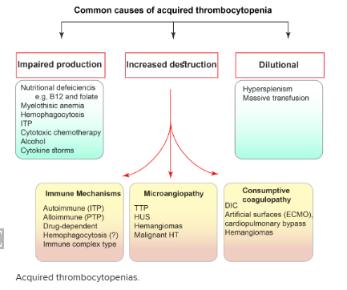
Sequestration (hypersplenism) also lowers the circulating count (slide 25’s heading and slide 36). The figure files hypersplenism beside massive transfusion under “dilutional”; the mechanism is pooling of platelets in an enlarged spleen, so learn it as sequestration.
Clotting and platelet tests by condition (slide 29, Table 4-9)
Slide 29 is a photograph of a textbook page; its tables are typed here. PFA is the platelet function analysis.
| Condition | PT | aPTT | PFA | Platelet count |
|---|---|---|---|---|
| von Willebrand disease | Normal | Increased (factor VIII) | Abnormal | Normal |
| Hemophilia A or B | Normal | Increased | Normal | Normal |
| Disseminated intravascular coagulation | Increased | Increased | Abnormal | Low |
| Uremia | Normal | Normal | Abnormal | Normal |
| Aspirin or nonsteroidal anti-inflammatory drugs | Normal | Normal | Abnormal | Normal |
| Liver failure, early | Increased | Normal | Normal | Normal |
| Liver failure, late or severe | Increased | Increased | Abnormal | Low |
| Immune thrombocytopenia, thrombotic thrombocytopenic purpura, hemolytic uremic syndrome, heparin-induced thrombocytopenia | Normal | Normal | Normal | Low |
★ Aspirin and other nonsteroidal anti-inflammatory drugs give a normal platelet count, PT and aPTT with an abnormal platelet function result. When platelet function is the only abnormal result, think medications and ask about over-the-counter products, because patients may not realize a product they take contains aspirin.
The pattern to hold: a platelet problem (count or function) gives a normal PT and aPTT; a low count with normal PT and aPTT fits immune thrombocytopenia, thrombotic thrombocytopenic purpura, hemolytic uremic syndrome or heparin-induced thrombocytopenia; add prolonged PT and aPTT with a low count and it is disseminated intravascular coagulation or severe liver failure.
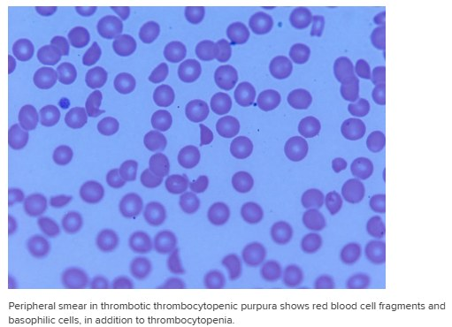
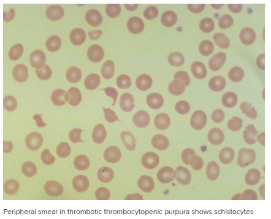
10.7 · Objective e — When to order coagulation studies
- Symptomatic bleeding or a suspicious bleeding history: the workup is a complete blood count, a peripheral smear and coagulation studies.
- Preprocedural bleeding-risk assessment — but mild or moderate PT/aPTT prolongation does not predict bleeding in a nonbleeding patient.
- Warfarin monitoring (the INR).
- Suspected disseminated intravascular coagulation, liver disease or vitamin K deficiency.
- Suspected thrombosis: D-dimer, to help rule out.
The slide’s own summary: the patient is bleeding; the patient is clotting; the patient is bleeding and clotting at the same time; need for anticoagulation or thrombolytics; need for reversal of anticoagulation; monitoring medications; diagnosing disorders of hemostasis and thrombosis; and the perioperative setting.
10.8 · Objective f — Interpreting PT, INR, aPTT and D-dimer
★ Where to begin. A prolonged PT or aPTT means the clotting factors, secondary hemostasis, and not the platelets. Normal PT and aPTT with bleeding means investigate the platelets next, with platelet function testing and von Willebrand studies. Bleeding and clotting are worked up with the same tests; read the pattern first.
Pattern-recognition table (slide 24)
| PT/INR | aPTT | Fibrinogen | D-dimer | Platelets | Interpretation |
|---|---|---|---|---|---|
| ↑ | Normal | Normal | Normal | Normal | Liver disease, vitamin K antagonist, factor VII deficiency, oral factor Xa inhibitor |
| Normal | ↑ | Normal | Normal | Normal | Heparin or dabigatran (thrombin time also ↑); or factor VIII, IX or XI deficiency (with a bleeding history); or lupus anticoagulant or factor XII deficiency (no bleeding history) |
| ↑ | ↑ | ↓ | ↑ | ↓ | Acute disseminated intravascular coagulation |
| Normal | Normal | Normal | ↑ | Normal | Acute thrombosis (nonspecific) |
Patterns to watch for (slide 32)
| Result | Think |
|---|---|
| Normal PT and normal aPTT, but bleeding | A platelet disorder, mild von Willebrand disease, factor XIII or alpha-2 antiplasmin deficiency, or impaired fibrinolysis |
| Prolonged PT, normal aPTT | Extrinsic pathway (factor VII), early vitamin K deficiency, liver disease, warfarin |
| Normal PT, prolonged aPTT | Intrinsic pathway (factors VIII, IX, XI; von Willebrand disease; factor XII), inhibitors, heparin, or lupus anticoagulant |
| Prolonged PT and prolonged aPTT | Common pathway or combined deficiencies, disseminated intravascular coagulation, liver disease, severe vitamin K deficiency |
| Low fibrinogen and elevated D-dimer | Disseminated intravascular coagulation, cirrhosis, hyperfibrinolysis |
Factor XII deficiency prolongs the aPTT but does not cause bleeding, and lupus anticoagulant prolongs it in the tube without a bleeding history. A prolonged aPTT with no bleeding history therefore points to factor XII deficiency or lupus anticoagulant, while factor VIII, IX or XI deficiency comes with a bleeding history. The history decides.
★ Acute disseminated intravascular coagulation is the pattern of a prolonged PT and aPTT, low fibrinogen, a raised D-dimer and a low platelet count — nothing is normal.
Clotting studies by condition (slide 29, Table 4-10)
| Condition | PT | aPTT | Mixing study | Thrombin time |
|---|---|---|---|---|
| Inhibitor of factors VIII, IX, XI or XII; lupus antiphospholipid antibodies | Normal | Increased | Abnormal (does not correct) | Normal |
| Hemophilia A (factor VIII) or B (factor IX) | Normal | Increased | Normal (corrects) | Normal |
| Disseminated intravascular coagulation | Increased | Increased | Normal | Increased |
| Heparin | Normal | Increased | Abnormal | Increased (reptilase time normal) |
| Low fibrinogen | Increased | Increased | Normal | Increased |
| Factor VII deficiency | Increased | Normal | Normal | Normal |
Two test names from slide 27’s notes: the reptilase time measures how quickly a clot forms with a snake-venom enzyme and mainly assesses fibrinogen function (it is normal with heparin, which is how heparin effect is separated from a fibrinogen problem); the dilute Russell viper venom time detects lupus anticoagulant.
Disseminated intravascular coagulation (slide 30)
| Test | In disseminated intravascular coagulation | Other causes of the same result |
|---|---|---|
| Platelet count | Decreased | Sepsis, impaired production, major blood loss, hypersplenism |
| Prothrombin time | Prolonged | Vitamin K deficiency, liver failure, major blood loss |
| aPTT | Prolonged | Liver failure, heparin treatment, major blood loss |
| Fibrin degradation products | Elevated | Surgery, trauma, infection, hematoma |
| Protease inhibitors (protein C, antithrombin, protein S) | Decreased | Liver failure, capillary leakage |
No single line of this table proves the diagnosis; every abnormality has another cause, which is why the picture (low platelets, long PT and aPTT, low fibrinogen, high D-dimer) matters rather than any one value.
An isolated prolonged aPTT, step by step (slide 27)
![Algorithm for isolated prolongation of the partial thromboplastin time. Rule out heparin effect, then measure fibrinogen activity. If fibrinogen is high, do a 1:1 mixing study. If it corrects, evaluate factor deficiency with a factor VIII assay; a low factor VIII with abnormal von Willebrand factor means von Willebrand disease and with normal von Willebrand factor means hemophilia. If it fails to correct, look for an inhibitor; phospholipid dependence points to lupus anticoagulant and no dependence to a specific factor inhibitor. If fibrinogen is low, measure fibrinogen antigen to separate hypofibrinogenemia from dysfibrinogenemia.](pdm-exam-2-study-guide-images/10-isolated-ptt-algorithm.png)
- Rule out heparin effect first, then measure fibrinogen activity.
- Fibrinogen low (below 100 mg/dL on the algorithm): measure fibrinogen antigen. Low antigen = hypofibrinogenemia; normal antigen = dysfibrinogenemia.
- Fibrinogen high: do an immediate 1:1 mix (also incubated).
- Corrects → factor deficiency → factor VIII assay. A low factor VIII → von Willebrand antigen and activity: abnormal = von Willebrand disease; normal = hemophilia. A normal factor VIII → assays for factors IX, XI and XII.
- Fails to correct → an inhibitor → phospholipid neutralization (dilute Russell viper venom time): phospholipid-dependent = lupus anticoagulant; not dependent = a specific factor inhibitor (confirm with an inhibitor screen and the Bethesda assay).
Take-away from the notes: if only the aPTT is abnormal, keep hemophilia in the back of your mind.
A suspected inherited bleeding disorder (slide 28)
![Algorithm for a suspected inherited bleeding disorder. Start with the prothrombin time, partial thromboplastin time, thrombin time or fibrinogen activity assay. If all are normal: platelet disorders and mild von Willebrand disease, deficiency of inhibitors of the fibrinolytic system, or factor XIII deficiency. If prolonged: clotting factor deficiency, split by prolonged prothrombin time only (factor VII), partial thromboplastin time only (factors VIII, IX, XI or severe von Willebrand disease) or both (common pathway factors or a fibrinogen problem, separated by the thrombin time).](pdm-exam-2-study-guide-images/10-inherited-bleeding-algorithm.png)
Start with the PT, aPTT, thrombin time or fibrinogen activity assay.
| Screens | Think | Next |
|---|---|---|
| All normal | Platelet disorders and mild von Willebrand disease: skin bruising, petechiae, mucous membrane bleeding. | Platelet function analyzer closure time or bleeding time, platelet count and morphology, aggregation study, von Willebrand antigen and activity |
| All normal | Deficiency of inhibitors of the fibrinolytic system: severe bleeding, including hemarthroses and hematoma after trauma or surgery. | Euglobulin clot lysis time; alpha-2 antiplasmin and plasminogen activator inhibitor 1 |
| All normal | Factor XIII deficiency: umbilical stump bleeding and lifelong severe bleeding of any tissue. | Clot stability test; factor XIII assay |
| Prolonged | Clotting factor deficiency (mild, moderate or severe): large, often palpable ecchymoses and bleeding into deep soft tissues (joints, muscles) with hematoma formation. | Split by the pattern below; then selective factor assays and/or fibrinogen activity and antigen |
| Prolonged screen | Deficiency |
|---|---|
| PT only | Factor VII |
| aPTT only | Factor VIII (hemophilia A), IX (hemophilia B) or XI; severe von Willebrand disease |
| PT and aPTT | Normal thrombin time: deficiency of factor X, V or II (or combined factor V and VIII deficiency). Prolonged thrombin time: hypofibrinogenemia or dysfibrinogenemia. |
The footnote on slide 28: the fibrinogen activity assay is now routinely available and has largely replaced the thrombin time for evaluating fibrinogen function.